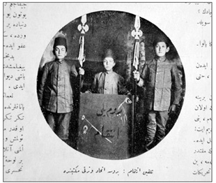
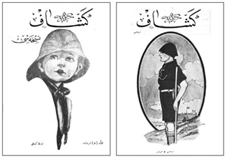

Balkan Harbi, Osmanlı’yı bir Avrupa ülkesi olmaktan çıkarmıştı. Bundan böyle Doğu Trakya Osmanlı Devleti’nin Avrupa’daki tek toprak parçasıydı. Balkan Harbi ertesi Osmanlı Anadolu eksenli bir devlet olmayı önemsedi. Özellikle Cihan Harbi yıllarında Anadolu bir başka vurgulandı. Savaş nedeniyle Osmanlı’nın denizden abluka altına alınması, ülkenin büyük ölçüde Anadolu buğdayıyla beslenmesine neden olmuştu. Yeni doğmakta olan ulus-devlet kimliği Anadolu üzerine inşa edilecekti. Böylece Osmanlılık bir anlamda Balkan Harbi’yle son bulmuş oluyordu.
Halka Doğru ve İslam
Balkan Harbi, Osmanlı Müslüman’ının iktisadi uyanışında ya da o günkü deyişle “intibâh-ı iktisadî”de bir dönüm noktası oldu. Savaş acı anılar bıraktı; milliyetçilik geniş bir tabana yayıldı. Bu arada savaşın neden olduğu mezalim, Balkanlar’da çetelerin hunharca sivil halkı katletmesi, yitirilen topraklar Osmanlı toplumunda Müslüman’la gayrimüslim arasında derin bir uçurum yarattı. Farklı unsurları bir arada tutan “millet” sistemi giderek çözüldü; milliyetçilik duyguları İslam’ın oluşturduğu platformda güçlü bir ideolojik silaha dönüştü. Bundan böyle Müslüman Türk unsur savunmayla saldırı duygularını birlikte yaşadı; Batı’nın gerek siyasi, gerek iktisadi yayılımına karşı etkin bir direnç oluşturdu. Bu direnç kimi kez infiale, kimi kez “intikam”a vardı. Okullarda “intikam” köşeleri düzenlendi. İntikam üzerine şiirler yazıldı.
II. Meşrutiyet’in ilk yıllarında oluşan liberal ortam Osmanlı bireyini, vatandaş kimliğini yaratmayı hedeflemiş, cemaatlerden oluşan “millet” sistemini aşarak bireyi devlete muhatap kılmak istemişti. Oysa kısmen kapitülasyonlar, kısmen güçlenen milliyetçilik duyguları sonucu, “millet” silineceğine güçlenmiş, cemaatler yarı bağımsız bir konum kazanmışlardı. “Millet”lerin mebuslar aracılığıyla Osmanlı Mebusan Meclisi’nde temsili bu unsurlara yasama düzeyinde siyasal güç kazandırdı; inanç, düşünce gibi geniş demokratik hakların kullanıldığı bir dönem yaşandı; birçok “unsur” fırka, cemiyet ve kulüplerde örgütlendi. II. Meşrutiyet’in pekiştirmek istediği Osmanlılık anlayışı kısa sürdü. Cemaatlerin balayı Balkan Harbi’yle son buldu. Osmanlı yönetiminin “ittihad-ı anâsır” ya da unsurların [milletlerin] birliği özlemi Balkan Harbi’yle düş kırıklığına dönüştü; geniş toprakların yitirilişi Osmanlı “millet”lerini birlikten, bütünlükten kopararak bölünmüşlüğe, çözülüşe götürdü.
İNTİKAM!
Rumeli’ni gâvurların top dumanı sararken,
Şakırdayan kılıçlardan Türk kafası düşerken,
Nur ümitli genç kızların namusları sönerken,
Bu zalimler Türk yurdunun etrafını yürürken,
Kadın gibi durmak sana yavrucuğum yakışmaz!
Sonra ruhu cennetteki analara kavuşmaz!
Çünkü senin ecdadının kemikleri kırıldı,
Camilerin, mescitlerin temelleri yıkıldı,
Şehid olan babaların kefenleri yırtıldı,
Atalardan müberrât kalan bütün hayrât satıldı.
Reva mıdır? Senin kalbin dursun böyle rahatça,
Ağlamalı küçük ruhun buna senin en önce,
Şehit olan kan içinde, topraklara yıkılan
Yarasından kanlar sızan babacığın bak aman:
Yalvarıyor, “Kâfirlere saldır oğlum kılıcı”
Saldırmazsan olur sonra ilerimiz pek acı,
Şimdi senin en mukaddes yapacağın bir iş var!
O da oğlum, alacağın eşyaları Türk’ten al!
Ne zarar var? Zamanenin modasından geri kal,
Fakat sana, yapacağın bu hayırdan hayat var!!
Beşiktaş - Rumelili Ahmed Kemâl
“İntikam”, Türk Duygusu, yıl 1,
sayı 1, 25 Nisan 1329, s. 14.
Bu arada siyasal açıdan Babıâli Baskını Osmanlı çoğulculuğunu noktaladı. Bundan böyle Cihan Harbi’nin sonuna değin İttihat ve Terakki mutlak güç olarak ülkeyi yönetecekti. Her türlü ayrılıkçı akım bastırılacaktı. Osmanlı kendini her ne pahasına olursa olsun savunacaktı. “Hürriyet”i ilan edenler toprak yitirme kaygısıyla her türlü baskı yöntemini mubah gördüler. Cemaat anlamına “millet”ten ulus-devleti oluşturacak millete geçiş için her türlü yöntem uygulamaya sokuldu. Bir yandan ulusal kimliği oluşturan taban biçimlenirken diğer yandan “başka”sı yıldırıldı; göçürüldü. İzleyen on yıl içinde ulus-devletin beşeri faturası yüksek olacaktı.

Balkan Harbi’yle birlikte Müslüman Türk unsur savunmayla saldırı duygularını birlikte yaşadı.
Batı’nın gerek siyasi, gerek iktisadi yayılımına karşı bir direnç oluşturdu. Bu direnç kimi kez infiale,
kimi kez “intikam”a vardı. Okullarda “intikam” köşeleri düzenlendi. İntikam üzerine şiirler yazıldı.
Osmanlı topraklarında gayrimüslim unsurlar arasında milliyetçilik diye nitelendirilebilecek duygular çok eski tarihlere uzanıyordu. Gayrimüslimlerin iktidardan uzak kalmaları ve yönetilen olmaları çoğu kez merkeze karşı bir tavrı gündeme getirmişti. Bu tavır ortak duyguya dönüştüğü ve din, dil gibi etmenlerle beslendiği oranda milliyetçilikler ortaya çıkmıştı. Türk unsuru vurgulayan milliyetçilik ise Osmanlı milliyetçiliklerinin en sonuncusu oldu. Her ne kadar dilde ve edebiyatta 19. yüzyılın ikinci yarısından itibaren bu doğrultuda gelişmeler izlenmiş; 1908’le birlikte Türk Derneği, Türk Yurdu Derneği, Türk Ocağı vb fikir örgütleri ortaya çıkmış; Türk Derneği Mecmuası, Türk Yurdu, Genç Kalemler, Yeni Felsefe Mecmuası, Halka Doğru, Türk Sözü gibi Türk unsurunu vurgulayan yayın organları görülmüşse de, bu tür duygular “seçkin” diye tanımlanacak okuryazar bir zümrenin ötesinde pek ilgi uyandırmamıştı. Anadolu ağırlıklı olarak Müslüman’dı. Müslüman unsur Türk kimliğini oluşturacak ortak paydaya sahip olsa dahi bunun bilincinde değildi. Oysa Balkan Harbi’yle durum değişti. Milliyetçilik Müslüman Türk aydın zümrenin ötesinde halk arasında da yankı uyandırdı. Türk milliyetçiliği kentlerde ve kasabalarda kitleselleşti; geniş bir kesimi peşinden sürükledi. İttihatçıların en büyük başarısı bir “ulus” yaratmaktı. Milli Mücadele böyle bir birikimi devraldı ve Cumhuriyet’le taçlandırdı.
Balkan Harbi’nin bu sihirli işlevi nereden kaynaklanıyordu? Neden Balkan Harbi böyle bir işlev gördü? Bu tür soruların yanıtları, Balkan Harbi’nin daha önceki savaşlardan farklı oluşunda yatıyordu. Balkan Harbi sırasında iletişim araçları çok daha gelişmişti. Cephedeki gelişmeler kitle iletişim araçlarıyla, gazetelerle günü gününe İstanbul’a ulaşıyordu. Yaralılar, savaş göçmenleri akın akın İstanbul’a geliyor, Osmanlı payitahtı savaşı bilfiil yaşıyordu. Dünün savaşları cephede sınırlı kalırken, Balkan Harbi’yle savaş tüm Osmanlı mekânını etkilemişti. Cepheyle gerisi arasında fark kalmamıştı. Bunda Meşrutiyet’in Abdülhamid dönemine oranla, yayın alanında kazanımlarının büyük rolü vardı. Gazeteler, dergiler, hatta ilkokul ders kitapları Balkan Harbi’ni enikonu işliyordu. Balkan Harbi Osmanlı için bir anlamda topyekûn bir savaştı: Cihan Harbi’nin provasıydı. Hem bu kez, son büyük savaş 93 Harbi’nde olduğu gibi Ruslarla ya da başka yabancı devletlerle değil; daha çeyrek yüzyıl önce Osmanlı’nın parçası olan, Osmanlı tebaası olan unsurlarla savaşılmaktaydı. Osmanlı Müslümanı, kısa bir süre önce aynı devlet çatısı altında yaşadığı komşusuyla, Rum’la, Bulgar’la, Sırp’la kanlı bıçaklı olmuştu. 19. yüzyıldan itibaren çökmeye yüz tutan “millet sistemi” cephe gerisinde etkisini göstermişti. Komşu bundan böyle “öteki”ydi.
Balkan Harbi acı anılar bıraktı; milliyetçilik geniş bir tabana yayıldı. Bu arada savaşın neden olduğu mezalim,
Balkanlar’da çetelerin hunharca sivil halkı katletmesi, yitirilen topraklar Osmanlı
toplumunda Müslüman’la gayrimüslim arasında derin bir uçurum yarattı.
Bu bağlamda en uzun Cihan Harbi, Osmanlı Devleti’ninki oldu. Milli Mücadele ile sonuçlanan Cihan Harbi Balkan Harbi’yle birlikte on yıl sürdü. Diğer savaşan ülkeler, Cihan Harbi’ni dört yılda sona erdirmiş; Versailles, Trianon, Saint-Germain ve Neuilly ile barışa ulaşmışlardı. Türkiye ise Cihan Harbi’ne bir anlamda Balkan Harbi ile başlamış ve Lozan ile sona erdirmişti. Balkan Harbi dünya tarihi kadar Türkiye’nin yakın dönem tarihi açısından da bir dönüm noktası oldu; bir dönüşümü simgeledi. Ulusal kimliğin doğuşu, geniş kitlelerce benimsenişi Balkan Harbi’nin ürünüydü. Yeni bir siyasal yapıya, Cumhuriyet’e yönelen ulusal kimlik Balkan Harbi ile birlikte gündeme geldi. Balkanlar’ın yitirilişi yeni bir ulusal kimlik olarak Türk milliyetçiliğinin ön plana çıkarılmasına neden oldu. Osmanlı’nın 1912’ye kadar uzlaşan “unsur”ları, 1912 sonrası çatışan “ulusal kimlik”lere dönüşmüş, ortak coğrafyayı gerektiren imparatorluktan ulus-devlete geçiş bir tür “ulusal türdeşliği” gündeme getirmişti. Anadolu Balkan Harbi ile birlikte anlam kazandı; Türk kimliği Anadolu’da benliğini buldu.
Halka Doğru hareketi son kertede iktisadi boyutuyla belirgin bir nitelik kazandı. Anadolu insanını köyü, kasabası ötesinde ülkeyle bütünlemenin belki de en etkin yolu onun meslek sahibi olmasına omuz vermek, pazar için üretimde bulunmasını sağlamak ve ulusal pazara bağımlı kılmaktı. Savaş yıllarında Anadolu ürünü revaç bulmuş, büyük kentler Anadolu’ya muhtaç kalmış ve savaş enflasyonu nedeniyle Anadolu köylüsünün cebi para görmüştü. Babıâli Anadolu’nun gerçek değerini savaş ortamında idrak etti. O güne kadar Anadolu, aşar ve ağnam başta olmak üzere, zorunlu tasarruflarla devlet bütçesine katkıda bulunmuştu. Oysa reayanın halka dönüştüğü bir evrede gönüllü tasarruflar da bir o kadar önem kazanıyordu. Halktan vergi alınabildiği gibi, halka borçlanmak da mümkündü. Nitekim Cihan Harbi’nde savaşan ülkeler halka borçlanarak ülkedeki satın alma gücünü sınırlamış ve böylece enflasyonist girdaba düşmemişti. İç borçlanma gelişmiş ülkelerin derinlik kazanmış mali yapılarında uzun yıllardır yer alıyordu. Oysa Osmanlı’nın köşe sarraflarına ya da Galata bankerlerine borçlanmanın dışında bir deneyimi yoktu. Savaş sırasında Almanlar Babıâli’ye iç borçlanmaya gitmesini önermiş, ama Osmanlı yönetimi buna bir türlü cesaret edememişti. Ancak bıçak kemiğe dayandığı bir evrede savaşın finansmanında son çare olarak iç borçlanmaya ya da “dahilî istikraz”a gidilmişti.
“Dahilî istikraz”, “halka doğru gitmek” için güzel bir fırsat oluşturmuştu. Hükümet, matbuat, eli kalem tutan, sözü halk için muteber sayılan “erbâb-ı fikir ve ilim” taşrada köylere ve köylülere kadar gidebilecek, halkı iç borçlanma bonoları satın almaya özendirecekti. Bu ise “halka doğru teşkilatında mühim bir hatve-i teşebbüs” olabilirdi. Bu sayede “ ‘halka doğru gitmek’ nazariyesi” ülke çapında benimsenir, iç borçlanma çok daha kapsamlı bir işlev görmüş olurdu.179Bu satırlara yer veren Sabah gazetesine göre, “halka doğru gitmek, daha açık tabir ile halka kadar inmek” Türkiye’de önemsenmesi gereken “ictimai zaruret”lerin en büyüğüydü. İster borçlanma olsun, ister idari, siyasi ya da iktisadi kararların işleme sokulmasından olsun, başarının sırrı yapılacak işin halka, onun anlayacağı bir dille anlatılmasında yatıyordu. “Halka doğru yürümek” engebeli bir yolda ilerlemeyi gerektirirdi. Osmanlı’nın başarısızlıklarının nedeni, icraatında halkın anlayabileceği düzeye, onun “muhit-i idraki”ne giremeden, kapı eşiğinde sonuçsuz kalmasıydı. Sabah başyazarı “Vakıa halka doğru yürüme[nin], fakat muvaffakiyetle yürüme[nin] pek güç bir şey olduğunu bilmeyenlerden değiliz” diyordu. Hele Türkiye gibi geniş bir alana yayılmış, dağınık nüfuslu, farklı dil, mezhep, gelenek, göreneklerin bir arada yaşadığı bir ülkede “halka doğru” teşkilatlanmanın güçlüğü yadsınamazdı. Böyle bir güçlüğün üstesinden gelebilmek için önce “teşkilatçı ruh”a sahip olmak, sonra “servet, ilim ve marifet, azim ve cesaretle” işe koyulmak gerekirdi. Sabah gazetesinde yer alan başka bir başmakalede Selim Sırrı, “İctimai Musahabeler: Halka Doğru” yazı dizisiyle, “halka doğru” hareketinin muhtelif sınıflar arasında bir tesviye, toplumsal farklılıkları giderici bir işlev göreceğini söylüyordu. Ancak bu tesviye, “tesviye-i terbiye” gibi genel ortalamaya yönelik bir girişim olmayacak, aşağıda kalanları yukarıda bulunanların düzeyine çıkaracaktı. İnsanlar eğitim gördükçe genel kültür [hars] açısından az çok bir “muvazene” [denge] oluşacaktı.
Solidarist görüşler artık Sabah sayfalarında bariz bir biçimde yer alıyordu. Cihan Harbi’nin neden olduğu eşitsizlikler ancak solidarizmle giderilebilirdi. Savaş ticaret alanında pek büyük “tahavvül”ler, değişiklikler doğurmuş, pek çok kişi hatır ve hayallerinden geçmeyen “azim servetler” elde etmişti. “Bunları temin eden vatan için, kendilerinden biraz yardım istemek herhalde haksız bir talep sayılmayacaktı.” Savaş sayesinde bir hayli servet edinen vatandaşlardan ülke adına beklenen “hayır ve muavenet”e bir başlangıç olarak İzmir’de, Halka Doğru Cemiyeti’ne yapılan bağışlar örnek olarak gösteriliyordu. Nitekim o sıralarda derneğe yapılan “teberruat” 40.000 liraya yaklaşmıştı. Ülkeyi kalkındıracak, somut ihtiyaçların karşılanmasını sağlayacak mesaiyi yalnız hükümetten beklemek doğru olmazdı. Halk, kendi sorunlarına sahip çıkmalıydı. Varlıklı kesim ise bu konuda hayırseverliği elden bırakmamalıydı. Kimi çevrelerde bu tür bağışlar “vicdani vergi” olarak nitelendiriliyordu. İstanbul’un “zenginleri”nin de İzmir’i örnek alıp aynı özveride bulunmaları gerekiyordu. Tanin gazetesi tesanüt ya da dayanışma örneği olarak, İzmir’de faaliyet gösteren “Sabetay Kohen ve Mahdumları” ticarethanesinin Doktor Nazım Bey’e bir mektup yazarak “vicdani vergi”yi İstanbul’da ilk olarak kabul ettiğini ve kamuya yararlı bir girişim için [menafi-i umumiyeye hadim bir teşebbüs için] 100 lira teberru etmeye hazır olduğunu bildirdiğini yazıyordu.
“Herkes İçin İctimaiyyat”
Meşrutiyet yıllarında Türkçülük hareketi bir diğer boyutuyla “sivil toplum” arayışını simgeliyordu. Geleneksel Osmanlı düzeninde devlete kapulanmak, devlet ricali arasında yer almak bir ayrıcalıktı. Oysa üretken olan farklı bir kesimdi. Ömer Tarhan müstear adıyla yazdığı ve Türk Yurdu Kütüphanesi’nin 1914’te yayımladığı Herkes İçin İctimaiyyat – Ticaret ve Nasib adlı eserinde Ömer Seyfeddin bu hususa dikkat çekiyordu. “Taraf taraf Türk tüccarlarının yetişmesi, Türk zenginlerin çoğalması, Türk bankalarının açılması” ülkenin geleceğini belirleyecekti. Bu sayede ordular düşmanlardan öç alabilecekti. Türk ticareti ‘Türklük mefkûresi’ ile beraber büyüyecek, beraber yükselecekti. Ömer Seyfeddin “Türklerdeki bugünkü ticaret ve iktisat fikri Türklük mefkûresinden başka bir şey değildir” diyordu.180 “Ticaret ve Nasib” aşırı milliyetçi söylemine karşın, sivil toplum anlayışının belki de ilk yeşerdiği satırlardı.
Ömer Seyfeddin yaşamının son yıllarında İttihat ve Terakki yönetimini öyküleriyle eleştirmişse de Cihan Harbi sonuna değin İttihatçılık şiarına bağlı kalmış bir düşünürdü. İttihatçıların “güdümlü” yazarlarından biriydi. Cağaloğlu’nda, İttihat ve Terakki’nin genel merkezi Kırmızı Köşk’te Gökalp’in çevresinde toplanan bir dizi yazar gibi Ömer Seyfeddin de Cemiyet’in yörüngesinde yer almış, birçok eserini İttihat ve Terakki’nin mali desteğiyle çıkarılan Yeni Mecmua’da yayımlamıştı. “Eski Kahramanlar, Yeni Kahramanlar” Ömer Seyfeddin’in Cemiyet direktifleri doğrultusunda savaş yılgınlığını silmeye yönelik yazdığı epik öykülerdi. Tüm Meşrutiyet aydınları gibi Ömer Seyfeddin de düz yazılarını ictimaiyyat ya da sosyoloji olarak tanımlamıştı. İslam Mecmuası’nda “İctimaiyyat: Hars, medeniyet, temeddün”ü yazmış; Ö. S. rumuzuyla Mektep Çocuklarında Türklük Mefkûresi’ni kaleme almış; Tarhan müstear ismiyle Milli Tecrübelerden Çıkarılmış Ameli Siyaset’i yayımlamış; Türk Yurdu Kütüphanesi dizisinden Yarınki Turan Devleti’ni bastırmıştı.
Herkes İçin İctimaiyyat – Ticaret ve Nasib aynı zamanda sosyolojinin ne denli geniş bir bağlamda kullanıldığının kanıtıydı. Yukarıda belirtildiği gibi, Ömer Seyfeddin’e göre Türklerde doğmakta olan ticaret ve iktisat fikri “Türklük mefkûresi”nden başka bir şey değildi. Farklı bir okumayla Ömer Seyfeddin “sivil toplum”un peşindeydi. Devlete kapılanma anlayışının ötesinde üreten ve kendi başına örgütlenebilen, ancak “siyasi” bir boyutu olan bir unsura, bir ulus-devlete gönderme yapıyordu. Osmanlı toplumunun son kertesinde sivil toplumu “bakkallık” kurtaracaktı. Ticaret ve Nasib, özlemi duyulan Müslüman-Türk “orta sınıf”ın koordinatlarını çiziyordu. “Devlete kapılanma” geleneğinin sakıncalarını vurguluyor, ekonomide “rasyonalite”yi gündeme getiriyordu. Risalede Meşrutiyet milliyetçiliğinin maddi tabanının izi sürülebilirdi. Birikim sürecinin etnik yönü II. Meşrutiyet yıllarında sürekli tartışılmış, ilkel birikim “bakkallık”a kadar çekilmişti. Milliyetçilik ise yeni toplum anlayışının çimentosuydu. Bir boyutuyla Osmanlı toplumunu çözerken diğer boyutuyla yeni bir toplum anlayışının temellerini atıyordu. Toplumları “bütünleyen” milliyetçilik örnekleri İttihatçılar için uzak örnekler değildi. Alman milliyetçiliği ya da İtalyan milliyetçiliği bu tür bütüncül milliyetçiliğin somut örnekleriydi. Oysa Osmanlı pratiği farklı bir çizgide gelişiyordu. 19. yüzyılın başından beri Fransız Devrimi esintili milliyetçilik ayrıştırıcı bir işlev görmüştü. Önce Sırp ve Yunan, ardından Balkan milliyetçilikleri ve nihayet Müslüman unsur arasında Arnavut, Arap milliyetçilikleri Osmanlı’nın sürdürülebilirliğini sürekli sorgulatıyordu. Osmanlı’nın “millet” esası üzerine kurulu toplum dokusu yerini ulus-devletlerden oluşan devletçiklere bırakıyordu. Bu çözülüşün içerideki nedenlerle olduğu kadar dış etmenlerle de yakından ilişkisi vardı.
Edirne İttihat Mektebi Müdürü Nâfi Atuf (Kansu), Manastır Muallim Mektebi Müdürü Edhem
Nejad, İstanbul liselerinde beden eğitimi öğretmenliği yapan Ahmed ve Abdurrahman Robenson
kardeşlerin girişimiyle Osmanlı’da izcilik hızlı bir şekilde gelişti.
İşte Türk milliyetçiliği böyle bir ortamda yeşermişti. 19. yüzyılda gözlenen ticaretin gelişmesi ve parasallaşma iki ayrı etki alanı yaratmıştı. Pazar çoğu kez bütünleyici bir işlev görmüştü. Piyasanın oluşması ortak payda demekti. Pazar insanların paylaştıkları, ortak “değer ölçüleri”ni, parayı kullandıkları bir alandı. Ama öte yandan pazar ilişkileri, piyasanın gelişmesi yeni bir sınıfın da doğuşu anlamına geliyordu. Bu sınıfın içe ya da dışa dönüklüğü siyasal bir yapının sürdürülebilirliğini belirliyordu. Osmanlı gibi özellikle Batı’ya dönüklüğü açısından geri kalmış bir toplumsal yapıda orta sınıfın bütünleyiciliği ya da parçalayıcılığı tartışılabilirdi. Osmanlıcılık bütünleyici bir temele oturmuştu. Ama, din öğesinin giderek siyasallaştığı bir ortamda gücünü korumakta güçlük çekiyordu. Bu nedenle ayrışan milliyetçilikler Müslüman-Türk unsura da örnek olmuştu. Özellikle Balkan milliyetçiliklerinin izini süren Türk milliyetçiliği popülist bir çizgide “orta sınıf” tabanını küçük üreticilikte bulmuştu. Bu nedenle de örneğin ekonomik “rasyonalite”yi bakkallığa kadar götürmüştü. Çünkü sermaye birikimi o günkü ölçeklerle Osmanlı toplumunda yoktu. Birikimin güdük kaldığı bir ortamda ekonomik “rasyonalite”nin küçük üreticilikte somutlaşması doğaldı. Bu nedenle popülizm önem kazanıyor; bu nedenle halkçılıkta karar kılınıyordu. Liberal bir toplum modelinden çok, korporatif özlemler ön plana çıkıyordu. Kooperatifçilik girişimciliğin en güçlü odağı olarak görülüyordu. Kimi kez “lonca sosyalizmi”ne varan adalet mefhumları revaç buluyordu. Liberal düşünceye ters düşen “solidarist” “artık değer” kuramları toplumda yer ediyordu. Tüm bu göstergeler kapitalizmin farklı ortamlarda ne denli ilginç varyantlar yaratabileceğinin kanıtlarıydı
Ömer Seyfeddin ve Türk Gençliği
Herkes İçin İctimaiyyat – Ticaret ve Nasib sokaktaki adam için yazılmıştı. Bir tür “manifesto”ydu. Siyasetle ekonominin ortak paydada birleştiği bir belgeydi. Balkan Harbi’nin ateşlediği yeni bir “milliyetçilik” anlayışını gündeme getiriyordu. Harap camiler, duvarları yıkılmış medreseler, tenha ve pis sokaklar, kırık dökük evler, hocasız mektepler, yetim çocuklar, ulaşımdan yoksun sahralar, köysüz ovalar, miskin ve kubbeleri çatlamış tekkeler, buna karşın yüz binleri barındıran, işsiz güçsüz insanların devam ettiği kahveler; Türkiye’nin hali buydu. Balkan Harbi hüsranla sonuçlanmıştı. “Dedelerimizin karış karış kan dökerek aldıkları mukaddes topraklarda şimdi düşmanlarımızın haçlı bayrakları sallanıyor”du. İki milyon Türk esir ve perişandı. Dört bir yanda öksüzler ve dullar sürünüyordu.
Savaştaki bu yenilginin nedeni Ömer Seyfeddin’e göre “Türklerin uykuda” oluşuydu. Sanat, ticaret, servet yabancıların, Avrupalıların ya da Hıristiyanların elindeydi. Ahlak çöküntüye uğramış, mazi unutulmuştu. Türkiye sanki cehennem uçurumuna varan “canlı bir gaflet ormanı”ydı. Bu korkunç karanlıkta parıldayan küçük bir ışık, bir aydınlık vardı. O da “harekete gelmek isteyen Türk gençliği”ydi. Türk gençliği kımıldanabilse, öz yurdu olan Anadolu kurtulacak, beş yüz senedir taht kurduğu güzel İstanbul’un camileri kilise olmayacak, çan sesleri ezanın yerini almayacaktı. Ticaret ve Nasib, Türk gençliğine hatalarını gösteriyor, ona misyonunu hatırlatıyordu. Türk gençliği, sanat ve ticaretten nasibini alamamıştı. Para kazanmasını bilmiyordu.
Ömer Seyfeddin gençlere hitap ederken “Hepiniz tüccar ve sanatkâr olunuz.
Demircilik öğreniniz. Bakkal dükkânları açınız. Kundura ve çizme yapınız!
Terzilik ve ciltçilik evleri tesis ediniz. Yalnız para kazanmasını düşününüz;
para biriktiriniz! Bankaları ellerinize geçiriniz!” diyordu.
Meşrutiyet’in ilanı ertesi “iktisat” hemen her eli kalem tutanın ilgi odağı oldu. Gazetelerde iktisadi konular yer almaya başladı; iktisatla ilgili konular dergilerde işlendi; iktisat kitapları yayımlandı. Uhreviyetten dünyeviliğe doğru önemli bir çaba gözleniyordu. Ticaret ve Nasib’e göre, asırlardan beri askerlik yapmış, askerlikle yaşamış ve hâlâ askerlikle yaşayan bir topluluk ulus-devlet olamazdı. Bu nedenle yazar gençlere hitap ederken “Hepiniz tüccar ve sanatkâr olunuz. Demircilik öğreniniz. Bakkal dükkânları açınız. Kundura ve çizme yapınız! Terzilik ve ciltçilik evleri tesis ediniz. Yalnız para kazanmasını düşününüz; para biriktiriniz! Bankaları ellerinize geçiriniz!” diyordu. Meşrutiyet milliyetçiliğinin söylemi, gençliğe çizilen yol haritası buydu. Oysa Tanzimatçı Şarklı Türkler ülkeyi birdenbire Avrupalı bir millet haline koymak hususunda boşu boşuna çaba sarf etmişlerdi. Tüm çabalar boşa çıkmış, Türk tüccar, Türk sanatkâr, Türk sermayedar olamamıştı. Ticaret ve Nasib bu yolun çok daha uzun ve ince olduğu kanısındaydı. Türkler “memleketin iktisadiyyatı”na hâkim olmalıydılar.
İktisadi hâkimiyet zaman gerektiriyordu. Bu tür bir arzunun kısa sürede kuvveden fiile çıkmasını beklemek toplumsal gerçeklerle bağdaşmıyordu. Bir kere Türkler iktisat ve hesap işlerinden anlamıyorlardı. Bu çevrenin ve yüzyılların mahsulüydü. Türkiye’de hâkimiyet ve askerlik onları göbekten göbeğe tufeyli, maaşa bağımlı, hükümet hazinesinden yaşamaya alıştırmıştı. Üçü beş yapma, kazanç hırsı henüz doğmamıştı. Bunun dinle bir bağlantısı yoktu. Nitekim Rusya’daki “kan kardeşleri” siyasal egemenlikten mahrum olduklarından hesapçı ve tüccar olmuşlardı. Bu hususta Rusları bile geride bırakıyorlardı. Rusya Türkleri bu işi becerirken Osmanlı Türkleri neden bu alanda yaya kalıyorlardı? Kuşkusuz çevrenin ve geçmişin etkisi derindi. Ancak bu konuda “irade”nin rolü unutulmamalıydı. “Sunî ve şuurlu cereyanlarla, telkin ve tekrar ile” kaybedilen bu “kesb-i servet”, yani çalışıp kazanma hasleti yavaş yavaş oluşturulabilirdi. Öncelikle önyargılardan kurtulmak gerekirdi. Kimi çağdışı “millî telakkiler”den arınmalı ve yerlerine yenileri konmalıydı. Özellikle dilde bir dizi önyargı hüküm sürüyordu. İstanbul’da aşağı tabakadan, bayağılıktan söz edilirken “bakkal çakkal makulesi” deniyordu.

Talebe Defteri, ecdatlarının kahramanlık mirasını hatırlatmak amacıyla
keşşaflığı gençlere tanıtmayı ve sevdirmeyi görev biliyordu. Dergiye göre
geçmişte Osmanlıların her biri bir asker gibi güçlü, çevik ve maharetliydi.
“Makule” aşağılayıcı bir biçimde güruh anlamına geliyordu. Bakkallık toplumda en alt statüde yer alan uğraşlardan biriydi. Meşrutiyet öncesi bir Türk genci bakkal olsa, mahalle arkadaşları ondan selamı sabahı kesiyordu. Bekârsa evlenemiyor, ailesinin yüzkarası oluyordu. Oysa bakkallar arasında gün görmüş, devlet katında hizmet verdikten sonra bu mesleğe intisap etmiş olanlar vardı. Bu “muhterem ve nazik efendiler” “ömürlerini büyücek memuriyetlerde geçirmiş, rahat koltuklarda yalnız emretmeye ve kendine hizmet ettirmeye alışmış mütekait beyler” gençlerden daha güçlü ve alevli bir “iktisat aşkı”, bir “kazanç hissi” ile hareket ediyorlardı. Türk’ün aklı sonradan geliyor, er geç hidayete eriyordu. Akıl sanki başta değil, yaştaydı. Türk ihtiyarlığının zihniyetindeki bu değişiklik gençlere bir türlü sirayet etmiyordu. Türk gençliğinin gözü hâlâ memuriyette, mevkilerde, koltuklardaydı. Darülfünun ya da üniversite mezunlarının tek emeli devlete kapılanmaktı. Türk gençliğinin bu eğilimini değiştirmek, yavaş yavaş üşenmeden, yılmadan çalışmak gerekiyordu. Bu bir zihniyet sorunuydu. Eninde sonunda üstesinden gelinebilirdi. Her şeyden önce memurluğun esirlik, fakirlik, gayesizlik olduğu telkin edilmeliydi.181Bu görev her şeyden önce okuryazar kitlesine seslenen edebiyat çevrelerine düşüyordu.
Halit Ziya’nın [Uşaklıgil] İzmir çevresi ve ailesinin etkisiyle kaleme aldığı Ferdi ve Şürekâsı adlı eseri bir yana bırakılırsa, edebiyatta asla bir “tüccar enmuzeci”nin tasvirine rastlanmamış, bu tür bir uğraş okurlara sevdirilmemişti. Oysa roman hayatın ta kendisiydi. Mehmed Rauf’un o kadar özenerek tasvir ettiği kahramanlarının iktisadi ve mali konumları sanki bir hayal dünyasının mahsulüydü. Gerçekçi romanlarıyla ünlü Hüseyin Rahmi’nin kahramanlarının mali ve iktisadi hüviyetleri bile müphemdi; belirsizdi.
Türklerde paradan söz etmek bayağılıktı. Bu tavır yazarların da kalemini etkilemişti. Romanlarda mesut ve bahtiyar tipler hep büyük memurlar, paşalar, irad sahipleri ve mirasyedilerdi. Türk romanında tüccar tiplemesi yoktu. Oysa “hayat romanı değil, roman hayatı yapar”dı. Edebiyat-ı Cedide Kütüphanesi yıllarca Türk gençliğinin hayalini bezemişti, ona hükmetmişti. Hâlâ etkisini sürdürüyordu. Bu hükümranlık o denli bariz ve açıktı ki yeni yetişen şairler o okudukları romanlardaki kahramanların adlarını takınıyorlardı. Kimi “muaşşaka yapan” yani âşık gençler aşk mektuplarına romanlarda okudukları kahramanların adlarıyla imza atıyorlardı. Kısaca üslup sahibi edipler gençliğin zihniyetine hükmediyorlardı. “Sanat sanat içindir!” bu toplumda taassubun göstergesiydi. Milli edebiyatın misyonu farklıydı. Yazarların topluma karşı sorumlulukları vardı. “Muharrirlerin mensup oldukları millete karşı büyük vazifeleri vardı.” Yeni edebiyat “çaktırmadan memuriyet hayatının azaplarından, değişiksizliklerinden, mahdutluğundan” söz etmeli, milliyetperver bir Türk edibi Türklere özellikle İstanbullulara bakkallığı sevdirmeliydi. Edebiyatta bu gerçekleşirse yirmi beş, otuz yıl içinde gençliğin zihniyeti de değişime uğrardı.
Bakkallık, günlük yaşamda iktisatla siyasetin odaklandığı en somut örnekti: “Bizi kasıp kavuran, hayat damarlarımızı ellerine geçiren, bize akla gelmez hainlikleri reva gören İstanbul’daki Yunanlı bakkal ordusu”ydu. Bu ordu asırlardan beri Türkleri eziyordu. Türk genci bir tezgâhta müşterisiyle alışverişe tenezzül etmediğinden iktisaden esirdi. İstanbul’da hemen bir milyon Türk yaşıyordu. Bunlar her gün Rum bakkallardan alışveriş ediyorlardı. O halde bir milyon kişi her gün bu Yunanlı bakkal ordusuna mühim bir para bırakıyordu. Bakkallık gibi kunduracılık ve terzilikte de durum farksızdı. Hıristiyan ve Yunanlı o müthiş bakkal ordusundan sonra bu Hıristiyan kunduracılık ve terzilik kolorduları geliyordu. Mesela Kadıköy’de çoğunluğu Türkler teşkil ediyordu. Ama bir tane Türk ve İslam kunduracı yoktu. Bakkallığı ve günlük yaşam için gerekli diğer uğraşları, sanatları Türklere sevdirmek ediplerin, muharrirlerin, konferansçıların, siyasi ve gayr-ı siyasi kulüplerin olduğu kadar okulların da göreviydi. Öğretmen öğrencilerine her fırsattan yararlanarak Türklerin düştüğü uçurumu göstermeli, bu uçurumdan çıkmanın tek yolunun bir tür altın bilezik olan “ticaret ve sanat” edinme olduğunu defaatle söylemeliydi.
Gazino, Birahane, Lokanta
Ticaret ve Nasib’e göre, Türklüğün ticarete istidatsızlığı yaygın bir kanıydı. Meşrutiyet’le birlikte başlayan “iktisadi uyanış” kimi çevrelerde geçici bir heves olarak görülüyordu. Nitekim, kimi Türk girişimleri hüsranla sonuçlanmıştı. Bu tür olumsuz sonuçlar Türklerdeki “fıtrî”, yani yapısal bir olgudan değil, stratejik hatalardan kaynaklanıyordu. Beyoğlu gibi Hıristiyan’ı Türk’ünden çok bir yörede girişilen teşebbüslerden sonuç beklemek zaten anlamsızdı. Evet, gazino, birahane, lokanta sahibine çok kâr bırakıyordu. Ama bu tür müesseseleri Beyoğlu’nda Rumlar ele geçirmişti ve kendi aralarında güçlü bir “tesanüd” vardı. Keza garsonların hemen hemen hepsi Rum’du. “Türk düşmanlığı ve Helenizm mefkûresi” bu garsonlarda sönmez bir ateş gibiydi. “Muavenet sandığı” adı altında yarı aleni, yarı gizli bir örgütleri vardı. Teşkilatın verdiği emirlere garson ordusunun neferleri itiraz etmeksizin boyun eğiyorlardı. Garson ordusu sendikaların sevkiyle Türk mal sahiplerinin türemesini önlüyordu. Rum gazinoları, Rum birahaneleri, Rum lokantalarının karşısında Türk gazinoları, Türk birahaneleri ile Türk lokantalarının peyda olmasını kendi felaketleri olarak görüyorlardı. Beyoğlu’nda birahane, lokanta tesis etmek isteyen Türk, mutlaka bu Rum garson ordusunun neferlerini istihdam etmek zorundaydı. İşte bu garsonlar, son kertede efendilerine hıyanet ediyor, müşterileri kaçırıyorlardı. Mal sahibi Türk zarara uğruyor, müessesesini kapatmak zorunda kalıyordu.
Ticaret ve Nasib’e göre “Garsonlar yaptıkları kahramanlıktan sevinir ve zararının sebebini anlayamayan eski efendisiyle eğlenirler”di. “Bir Türk’ü iflas ettirmek yararlıklarına mukabil mükâfatı da sendikadan almayı unutmazlar”dı. Türk müteşebbis işin iç yüzüne bir türlü akıl erdiremezdi. Oysa, Türk müteşebbis Türk garsonlar, yalnız para ile değil, milliyet ve din gibi en güçlü bağlarla kendine bağlı kardeşler istihdam etse, aynı akıbete uğramayacaktı. Ama ne yazık ki henüz hizmet sektöründe Türk garsonlar yoktu. Garsonluk deyip geçmemeliydi. Bu bir sanat, hem de gayet nazik bir sanattı. Gazinoculuk, otelcilik Türkler arasında revaç buluncaya kadar Türk müteşebbisler metr’dotel denilen müdürlerini, başgarsonlarını, küçük bir fedakârlıkla Rusya’dan getirtmeliydiler. Şimali Rusya Türkleri bu gibi sanatlarda Ruslardan daha becerikliydiler. İşte Beyoğlu’ndaki birkaç Türk’ün iflasına neden, sırf Rum garsonlardı. Ayrıca Türkler bu gibi teşebbüslere çoğunluğu Türklerle meskûn İstanbul, Üsküdar, Kadıköy cihetlerinde başlamalıydılar. Oralarda beceri kazanıp daha sonra Beyoğlu’nda mücadeleye atılmalıydılar. Türk müteşebbislerin “millî müşterileri” Beyoğlu’nda değildi. Rumlar ticaret sahasında İstanbul’a, Kadıköy’e, Üsküdar’a hâkimken Türklerin Beyoğlu’nda işleri yoktu.

Osmanlı Müslümanı, kısa bir süre önce aynı devlet çatısı altında yaşadığı komşusuyla,
Rum’la, Bulgar’la, Sırp’la kanlı bıçaklı olmuştu. 19. yüzyıldan itibaren çökmeye yüz tutan
“millet sistemi” cephe gerisinde etkisini göstermişti. Komşu bundan böyle “öteki”ydi.
Öte yandan Türkler malın albenisine, gösterişine yeterince önem vermiyorlardı. Reklam, tanıtım gibi alanlarda yaya kalıyorlardı. Güzellik, parlaklık, ilan... Bu üç şey ticarette sağlamlıktan önce geliyordu. Her ne ticarette olursa olsun “sergi” sanatı önemliydi. Camekân cezbedici olmalıydı. Camekâna takılan gözler müşteriyi bir tılsım gibi içeri çekerdi. Nihayet ticaretin sırrı, ruhu ilandı. Avrupa’da ticarethaneler ilan için hemen asli iş için yatırdıkları sermayelerine yakın bir meblağ ödüyorlardı. Bunun iyi bir örneği “Kırmızı Horoz”du. “Kırmızı Horoz”u İstanbul’da bilmeyen, görmeyen kalmamıştı.182
Türklerin zaaflarından biri de şirketleşememeleriydi. Meşrutiyet’in ilanının üzerinden beş yıl geçmesine rağmen, Türkler aralarında şirket kuramamışlardı. İki kişi bir araya gelemiyordu. Bunun nedeni “cemiyet hayatı”na alışkın olunmamasıydı. Herkes ayrı yaşıyor, bundan zevk alıyordu. İşte bu tavır bir an önce bırakılmalı, “merdümgirizlik”ten kurtulmalıydı. “İttihat kuvvet yapar”dı. İnsanın yalnız başına beceremeyeceği şeyleri, birkaç kişi bir araya gelip kolaylıkla halledebilirdi. “Tasallüf” yani övünme illeti, kendi gücünün dışında olan fazilet ve zarafet iddiasında bulunma Türk’ü yiyip bitirmişti. Herkes birbirini hakir görüyordu. Herkes birbirinin nazarında aptal, işten anlamaz, yalancı vesaire vesaire idi. Yakın dostların, sohbet ve ilişkileri genellikle “havaiyyat”la sınırlı kalıyordu. Türkler emeklerini ve servetlerini bir araya getirmezlerse, “saylarını ve paralarını karıştırmazlarsa” iktisadi mücadelede karşılarına dikilen, şirketleşmiş güçlü rakipleriyle baş edemezlerdi.
Öte yandan ticaretin ölçüsü rakamdı. Türklerde sayıların değeri yoktu. Türkiye’de yaşayan 14 milyon Türk yıllık bütçe diye bir şeyden habersizdi. Kimse evinin ve kendisinin masrafı için defter tutmamıştı. Defter tutmak, iktisat yapmak, para biriktirmek bir yana, en sade hesaplara, “amâl-i erbaa”ya, toplama-çıkarma-çarpma-bölmeden oluşan dört işleme bile Türk’ün aklı ermezdi. Ticaret ve Nasib’in yazarı okurlarına şu satırlarla seslenmekten kendini alamıyordu: “Ey Türkler! Hesap öğreniniz. Rüştiye mektebinde okuduğunuz ‘amâl-i erbaa’yı efsane sanmayınız. Öğrendiğinizi hayatınıza tatbik ediniz.”
Türkler, yukarda kısaca sayılan etkiler altında ticaret nasibinden, ticaret isteğinden mahrum kalmışlardı. Onların yeni girdikleri yolda başarı göstermeleri için en gerekli şey “milli mefkûre”nin tasavvuruydu. Türkler bundan böyle “ferden” ya da kendi çıkarları için, zengin olmak için iktisat ve ticaret âlemine atılmıyorlardı. Onları bu yola sevk eden şey Türklük mefkûresiydi. Türkler artık Türk olduklarını ve Türk’ten başka hiçbir millet olamayacaklarını anlamışlardı. Bu “Türklük” için nasıl donanma, ordu kaçınılmaz ise ticaret ve iktisat da gerekliydi. Buna inanmaları, buna iman etmeleri gerekiyordu. Şahsi hisler, arzular terk edilmeliydi. “Mefkûre”den, idealden doğan iradeleriyle ticaret âlemine atılmalıydılar. “Türklüğü, Türk düşmanlarının ticaret ve iktisat âlemindeki kuvvetleri tehdit ediyordu. Türk düşmanlarının ordularına karşı nasıl Türk orduları karşı geliyorsa Türk düşmanlarının tüccarlarına karşı da Türk tüccarları karşı gelecekti.”
Türklerin o gün için “iktisatça istiklali” yoktu. Düşmanlar, özellikle Yunanlılar Türkleri “sağmal bir inek” yerine koymuşlardı. “Bugün sağıyorlar, varımızı yoğumuzu çekiyorlar”dı. “Ceplerimizde para, köylerimizde ekmek, şehirlerimizde sanat bırakmıyorlar. Nihayet bizim takatımızı tamamiyle bitirip ihtiyar bir inek gibi bizi öldürecekler ve sonra aralarında Rumeli gibi paylaşacaklar”dı. Türkleri anayurdundan kovmaya hazırlanan, iktisadiyatıyla, ictimaiyyatıyla üzerine yürüyen o unsur şaha kalkmış, “edebiyatıyla, matbuatıyla, şiiriyle, musikisiyle, diniyle, ilmiyle, mektepleriyle, tiyatrolarıyla, bahriyesiyle, ticaretiyle bizim tepemize binmeye, bizi Kızılırmak’ın ötesine atmaya çalışıyor”du. İşte gerçek Türkler, duygulu ve bilinçli Türkler bu yakın tehlikeye karşı önlem alıyorlar, siyasi bozgunun ve ölümün başlangıcı olan iktisadi bozgundan vatanlarını kurtarmak için o güne kadar tenezzül etmedikleri ticarete atılıyorlardı. Amaçları, salt kişisel zenginlik değildi; zengin olarak vatanı düşmana haraç vermekten kurtarmaktı. İşte bu emeli de “Türklük mefkûresi”, “Türklük ideali” doğurmuştu. Bu ideal, ulus bireylerinin dağınık ve amaçsız arzularını bir araya getirmiş, birleştirmiş; herkesi yekvücut haline koymuştu. İdeal ya da “mefkûre” bir tohumdu. Milletin vicdanına düşmüştü. Giderek gelişecek, olgunlaşacaktı.
“Halka Doğru” ve Gençlik183
“Halka Doğru” gidenler ve “Yeni Hayat” özlemi duyanlar genç nesillerin bu konuda öncü bir işlev üstlenebileceğini görmekte gecikmemişlerdi. Gençliği asırlık letarjiden, her türlü hayatiyeti öldüren zihni ve manevi durgunluktan silkeleyip uyandırmak, halkla aydınlar arasındaki alanı daraltmak, gençliği sorumlu vatandaşlar olarak yetiştirmek gündemdeki önemli sorunlardan biriydi. Bunu eğitimin yanı sıra gençliği aktif konuma getirecek derneklerle sağlamak mümkündü. Nitekim gençlik dernekleri II. Meşrutiyet yıllarında ülkenin dört bir yanını sardı. İttihat ve Terakki’nin yan örgütleri olarak düşünülen bu dernekler aynı zamanda gençleri yurt savunmasına hazırlayan paramiliter nitelikte kuruluşlardı. Trablusgarp ve Balkan Harbi’nin ardından Cihan Harbi’nin Osmanlı Devleti’ni sürekli savaşmak zorunda bırakması paramiliter örgütlere elverişli bir ortam yaratmış, İttihatçıların ordu ile yakın bağları bu tür bir gençlik örgütlenişini kolaylaştırmıştı.184
Batı’da Napoléon’un Prusya’yı istilası ve Boer Savaşları sırasında gençliğin seferber edilmesiyle izciliğe doğru ilk adımlar atılmıştı. Bugünkü anlamda izcilik ilk kez bir İngiliz generali olan Baden-Powell tarafından kurulmuştu. İzcilik okul dışı etkinlikle gençleri bedenen ve ruhen eğiterek, yurduna yararlı olacak şekilde yetiştirmeyi amaçlıyordu. Baden-Powell, Güney Afrika Savaşı sırasında imparatorluk askerlerinin koşullara uyum sağlamakta karşılaştıkları güçlükleri görerek, onlara yardımcı olacak yöre çocuklarını haber getirip-götürme, yaralılara bakma ve nöbet tutma gibi görevler için eğitmişti. Bu girişimi sonuç verince 1907’de İngiltere’ye döndüğünde benzer bir eğitimi hedefleyen ve “Boy Scout” adını verdiği izciliği örgütlemişti. Bu çaba kısa sürede diğer Avrupa ülkelerinde de yankı uyandırdı. 1910’lu yıllarda hemen hemen tüm Avrupa’da izci örgütleri doğdu.
Öte yandan ulusçuluğun yükselişi sonucu gençliğin savaş ortamına hazırlanması, ona paramiliter bir formasyon verilmesi Batı’da gözlenen bir gelişmeydi. Osmanlı bu gelişmeleri izlemekte gecikmedi.185Ragıb Nureddin’in daha 1910 yılında Sây ve Tetebbu dergisinde yayımlanan yazılarıyla izcilik ya da o günkü adıyla keşşaflık Osmanlı okuruna tanıtıldı. Özellikle Balkan Harbi Osmanlı topraklarında izciliğin gelişimine büyük katkı sağladı. Bulgaristan ve Yunanistan’ın peşi sıra izci örgütleri kuruldu. 1913 yılında yayımlanan Keşşaf - Boy Iskavut başlıkla risalede İngiltere’de Kral George’un huzurunda gerçekleştirilen otuz bin kişilik bir izci geçit resminden söz edildikten sonra şu satırlar yer alıyordu: “Müntesiplerinin miktarı hemen aynı derecede olan İsveç, Almanya, Amerika, Japonya ve Fransa... ilh. keşşaflarını bir tarafa bırakarak düşman-ı canımız [can düşmanımız] olan Bulgar ve Yunan teşkilatından biraz bahsedelim. Bulgarlar ve Yunanlılar tarafından iki seneden beri kabul ve tatbik olunan keşşaflık –ki efradının sînleri 11 ile 25 arasında– memleketine ve milletine mühim ve büyük hidemât ve fedakârlıkta bulunuyor.”186
Nitekim izleyen yıllarda Edirne İttihat Mektebi Müdürü Nâfi Atuf (Kansu), Manastır Muallim Mektebi Müdürü Edhem Nejad, İstanbul liselerinde beden eğitimi öğretmenliği yapan Ahmed ve Abdurrahman Robenson kardeşlerin girişimiyle Osmanlı’da izcilik hızlı bir şekilde gelişti. Galatasaray ve İstanbul sultanileriyle Darüşşafaka’da ilk keşşaf ocakları kuruldu. Galatasaray Sultanisi’nin Gebze ve Riva’da, İstanbul Sultanisi’nin ise Yakacık’ta kampları bulunuyordu. Haydarpaşa İttihad Mektebleri’nde ilk kez kızlardan da bir izcilik teşkilatı kuruluyor ve kendilerine “keşşafe” deniyordu.187Meşrutiyet yıllarında Talebe Defteri adlı gençlere yönelik dergi izciliğe geniş yer ayırıyordu. Sayfalarında izcilikle ilgili haberlere, “İzcinin muhtırası” adı altında izciliğin temel prensiplerine ve yetiştirilmeleri için gerekli talimlere –Batı’dan alınmış resimlerle süsleyerek– yer veriyordu. Bu arada II. Meşrutiyet yıllarında çocukların ve gençlerin oyunları da siyasal toplumsallaşma gereği günün siyasi konjonktürüne uyumlu kılınıyordu. “Koşu oyunları”, “top oyunları”, “atma oyunları” ya da birdirbir, ip üzerinden atlamak, ip altından geçmek, sürünme müsabakası gibi oyunların yanı sıra “muharebe oyunları” başlığı altında bir dizi oyun gündeme gelmişti. Hudut kavgası, esir kurtarma, zincir kırmak, ip çekmek, değnek çekmek, süvari müsademesi, birbirini çekmek, itmek, ayak kaldırtmak, söküp çarpma, iki elle çekmek, bastırmak, ileri sıçramak, ayakta güreşmek, otururken güreşmek “muharebe oyunları” başlığı altında yer alıyordu.188
1914 yılında İzci Ocağı İç Nizamnamesi yayımlandı.18918 sayfalık bu nizamname o günün ulusçu söylemi ve semantiği ile izciliğin ilişkilerini net bir biçimde ortaya koyuyordu. Osmanlı izcileri yetenekleri ya da o günkü terimiyle “hünerleri” açısından beş sınıfa ayrılıyorlardı. Bunlar aşağıdan yukarı doğru, Adsız, Çeri, Tekin, Alp ve Tarhan’dı. İzci ocağına girmek için başvuran gençlere “adsız” adı veriliyordu. Adsızın Ocak’tan bir ad alabilmek için bir dizi bilgi ve görgü ile donanması gerekiyordu. Önce, Ocak’ın töresini öğrenecek ve bu töreye sadık kalacağına ant içecekti. Adsız ant içtikten sonra Ocak’ı ana, Başbuğ’u baba, bütün izcileri kardeş, üstlerini büyük kardeş bilecekti. Adsız izciliğin ilk hünerlerini öğrendikten sonra sınava giriyor ve başarılı olursa Çeri sınıfına geçiyordu. Bunun üzerine ocaktan “ad” ve bir tür arma olan “ongun” alıyordu. Çeri iken verilen bir üst sınavla Tekin sınıfına, Tekin iken özel bir hüner için gedik alan Alp sınıfına ve nihayet beş hünerden gedik alan Alp bir beratla Tarhan’a yükseliyordu. Ocak örgütü dört dereceden oluşuyordu: Oba, kol, oymak ve altınordu. Oba on izciden oluşuyordu. Çadırlarda, talim ve oyunlarda obanın buyrukçusuna “ars” deniyordu. Kol, dört obadan oluşuyordu. “Ağa” buyrukçusuna verilen addı. Ağanın ahlak ve seciye sahibi olması ve yirmi bir yaşını aşmış olması gerekiyordu. Arsı Ağa seçiyordu. Ağanın yokluğunda kendisine seçtiği bir “Kalfa” vekâlet ediyordu. Kalfanın on sekiz yaşından küçük olmaması gerekiyordu.
Bir üst aşama Oymak iki koldan oluşuyordu. Biri sağ kol, diğeri sol koldu. Ağalarına da Sağ kolağası ve Sol kolağası deniyordu. Oymağın buyrukçusuna Bey deniyordu. Ağaları beyler seçiyordu. Beyin üçten altıya kadar yamağı ya da yaveri bulunuyordu. Beyler, yamaklar ve ağalar arasından doğrudan doğruya seçilirdi. Oymakların buyrukçuları, yani beyler merkezdeki Sarı Oba’yı oluşturuyorlardı. Oymakların tümüne Altınordu deniliyordu. Altınordu’nun başında Başbuğ bulunuyordu. Her oymağın eski bir Türk kültürünü anımsatacak türde adı vardı: Oğuz, Kartal, Tuğrul, Sungur, Koyun, Keçi, Aslan, Teke, At, Geyik, Maral ve diğer hayvan ve nebat isimleri seçiliyordu. Oymağa mensup obalar ordugâha göre konumları doğrultusunda, kuzeyde “kara”, doğuda “gök”, batıda “ak”, güneyde “kızıl”, merkezde “sarı”, kuzeydoğuda “kara-gök”, kuzeybatıda “kara-ak”, güneydoğuda “kızıl-gök”, güneybatıda “kızıl-ak” adlarını alıyorlardı. Gök, gök-kara, kara, kara-ak obaları sol kolu; ak, ak-kızıl, kızıl, kızıl-gök obaları sağ kolu oluşturuyorlardı. Sarı oba merkezde bulunuyordu. Mahalli ortaların uygulamalı ve kuramsal dersleri için bir mekân tahsis ediliyor ve her ay başında mahalli ortalar etkinliklerini içeren bir rapor hazırlıyorlardı.
Batı’da Napoléon’un Prusya’yı istilası ve Boer Savaşları
sırasında gençliğin seferber edilmesiyle izciliğe doğru ilk
adımlar atılmıştı. Bugünkü anlamda izcilik ilk kez bir İngiliz
generali olan Baden-Powell tarafından kurulmuştu.
Osmanlı izcisinin giyim kuşamı Avrupa’dakilerin bir benzeriydi: Kabalak diye bilinen başlık, açık haki renkte çift cepli gömlek, açık haki renkte kısa pantolon, her kol için farklı renkte boyunbağı, kestane ya da haki renkte çorap, ayakkabı ve bel kayışı. Açık haki renkte pelerin ihtiyariydi. Ayrıca izcilerin 1.80 metre uzunluğunda ve 3 santim eninde, yarım ya da bir desimetreyi gösterecek şekilde işaretlenmiş baston diye tanımlanan bir sopa bulundurmaları gerekiyordu. Muallimlerin elbiseleri de izcilerinkinin aynıydı. Yalnız gömlek yerine ceket ve uzun baston yerine normal baston taşıyorlardı. Düşünce ve işin birliğini göstermek için kılığın tektip olmasına özen gösteriliyordu.
İzcilik işareti olan “ongun” ya da arma büyük orta tarafından yaptırılır, mahalli ortalar tarafından izcilere verilirdi. Bir izcinin bu ongunu alabilmesi için önce hüviyet cüzdanı alması ve ant içerek izcilik töresini bilmesi gerekiyordu. Gösterişli ant içme törenleri düzenlenerek sembollere ayrı bir önem veriliyordu. İzcilik Andı’nın sözleri şöyleydi: “Tanrı’ya ibadet ve hakana itaat edeceğime, daima vicdanlı ve vazifesini tanır, kanuna hürmet eder, yiğit bir adam olarak hareket eyleyeceğime, vatanımı sevip sulh ve harp zamanında fedakârlıkla hizmet yapacağıma, izcilik töresine baş eğeceğime namusum ve şerefim üzerine söz veririm.”
İzcilik töresi on iki maddeden oluşuyordu. Bunlar sırasıyla:
1. İzcinin sözü sözdür. İzci namus ve şerefini her şeyin ve hatta hayatının fevkinde tutar.
2. İzci itaatlidir. Çünkü vatanının selametinin ruhî inzibat olduğunu bilir.
3. İzci girişkendir.
4. İzci bütün işlerin mesuliyetini üzerine almaktan korkmaz.
5. İzci herkese karşı kanunî ve mültefittir.
6. İzci diğer izcileri hakiki bir kardeş bilir.
7. İzci âlicenap, cesur, daima zayıfların muavenetine hazırdır. Bu maksat için hayatını tehlikeye koymaktan çekinmez.
8. İzci her gün velev küçük olsun bir iyilik yapar.
9. İzci hayvanları sever ve onlara zulüm yaptırtmaz.
10. İzci daima şen ve nikbin ve ümidvardır.
11. İzci muktesiddir ve diğerlerinin malına hürmet eder.
12. İzci izzet ve itimad-ı nefis sahibidir.
Adsız olabilmek için izcilik töresini ezbere bilmek ve anlamını açıklayabilmek gerekliydi. Ant içildikten sonra ongun verilirdi. Çeri olabilmek için on beş dakikada iki kilometre koşmak, rüzgârda ateş yakabilmek, pusula kullanmak, güneş ve kutup yıldızı ile yön bulmak, bir dakika baktıktan sonra camekân ya da kümes içinde bulunan eşya ve hayvanları doğru tarif etmek, belli başlı izcilik düğümlerini atmak gerekiyordu. Tekin olabilmek için daha üst düzeyde direnç ve bilgi düzeyi aranıyordu. On dakikada iki kilometre koşmak ve elli metre yüzmek, mors alfabesini ya da kol ile işaretleri bilmek, harita okuyabilmek ve kırda bu haritayla yol bulmak, başlıca yıldızları ve burçları tanımak, üç saatte on beş kilometre yaya ya da dört saatte kırk kilometre bisikletle kat etmek, izleri tanımak ve takip etmek, beş menzillik mesafe için doğru olarak “saat-i harekât” tanzim etmek, doğru ve ayrıntılı olarak bir kentin, kasabanın yön, konum ve coğrafi durumunu kâğıt üzerinde tespit etmek, kırda değişik nesnelerin mesafelerini tahmin etmek, on tür ağaç ve nebat tanımak, el işleri, yama bilmek, yangın, boğulma gibi ilk yardım gerektiren durumlarda müdahale edebilmek, yara sarmak ve nihayet yeni gelen bir genci adsız olarak yetiştirmek gerekiyordu. Gedik alan izci Alp oluyor, altı değişik gediği olan Alp ise Tarhanlığa yükseltiliyordu. Gedik ve Tarhanlık beratı bir mümeyyiz heyeti önünde verilen sınavla elde ediliyordu. Oymağın bayrağı Osmanlı bayrağıydı. Kollar boyun bağlarının renklerine göre ayrılırdı. Obaların her birinin kendisine özgü bir işareti vardı. Bu işaret bir hayvan, ağaç, nebat ya da çiçekti.
Yukarıdaki sınavlar dışında Tekin ve Çeriler meslek sınavı alabiliyorlardı. Hünerlerini kanıtlayanlar o hünere özgü bir alameti sol kola takmaya hak kazanıyorlardı. İzcilerin öğrendikleri hünerler şunlardı. Tayyareci yardağı, doktor yardağı, heyet ve cev-i hava mütehassısı, gemici, nebatat mütehassısı, süvari, mızıkacı, doğramacı, aşçı, bisikletçi, elektrikçi, eskrimci, demirci, madenci, kılavuz, dilmaç, makineci, fotoğrafçı, itfaiye, terzi ve kunduracı, işaretçi ve telgrafçı, nişancı.190Bu örgüt modeli kısa sürede uygulamaya sokuldu. Türk Yurdu dergisi oymak beylerinin ant içme töreniyle ilgili verdiği haberde izciliğin Osmanlı topraklarına iyiden iyiye “Türkleşerek” girdiğini haber veriyor, törenin bilfiil Enver Paşa’nın hazır bulunduğu toplantıda gerçekleştirildiğini kaydediyordu.191
II. Meşrutiyet yıllarında Osmanlı gençlerine izciliği tanıtan birçok yazı kaleme alınmıştı. Ahmet Cevad’ın (Emre) Talebe Defteri’nde yer alan yazısında geçmişte Osmanlıların her birinin bir asker gibi güçlü, çevik ve maharetli olduğu belirtiliyordu. Talebe Defteri, ecdatlarının kahramanlık mirasını hatırlatmak amacıyla keşşaflığı gençlere tanıtmayı ve sevdirmeyi görev biliyordu.192Ülkeyi çökmekten kurtaran, hukukunu demirle, tırnakla, dişle muhafaza etme iktidarını veren bu büyük meziyet Osmanlı insanını doğuştan asker kılmıştı. Batılı ülkeler Osmanlı ecdadının bu fıtri yeteneğine özenerek son zamanlarda “scoutluk-keşşaflık” adı altında bu tür bir askerlik anlayışını kendilerine uyarlamışlardı. Derginin yine aynı sayısında Ahmet Cevad’ın yazdığı “Keşşaflık Türküsü” yer alıyordu. Bu türkü daha sonra Zatî Bey tarafından bestelendi.193
KEŞŞAFLARIN TÜRKÜSÜ
(Hep birden)
Ben bir keşşafım; bacağım, kolum,
Gözüm, dimağım, her yerim sağlam.
Padişaha, yurduma kulum;
Düşmana kalbim besler intikam.
Haydin sefere çevik keşşaflar,
Bize istikbal, zaferler saklar!
(Tek)
Yürekten kopan yanık türküler,
Bizim alaydan yok mu çağıran?
Öyle türküler ki versin haber,
Yıkılan yurttan, garib vatandan!
(Hep birden)
Haydin sefere çevik keşşaflar,
Bize istikbal, zaferler saklar!
(Diğer tek - Cevap)
Vardır kardeşim; burada bütün
Sineler yanık, yürekler ezik.
Dimağımızdan nasıl silinsin
Yanya, Kosova, Girid, Selanik;
(Hep birden)
Haydin sefere çevik keşşaflar,
Bize istikbal, zaferler saklar!
(Aynı ses - Devam)
Nerede kaldı Sultan Murad’ın?
Şanlı şehidin o ulu türbesi?
Koca Osmanlı, bu muydu adın?
Seni levm eder194 tarihin sesi!
(Hep birden)
Haydin sefere çevik keşşaflar,
Bize istikbal, zaferler saklar!
(Tek - evvelki)
Sus kardeşçiğim, bu kadar yeter:
Şanlı gözümüz şimdi kan ağlar!
Nasıl dayansın yanık yürekler,
Bu acı, katı taşları dağlar!
(Hep birden)
Haydin sefere çevik keşşaflar,
Bize istikbal, zaferler saklar!
(Tek - Cevap)
Susalım fakat, şöyle yürekten
Hep andımızı edelim tekrar;
Düşmanlar bilsin ki çok geçmeden
İntikam alır küçük keşşaflar!
(Hep birden)
Haydin sefere çevik keşşaflar,
Bize istikbal, zaferler saklar!
(Hep birden)
Ben bir keşşafım; bacağım, kolum,
Gözüm, dimağım, her yerim sağlam.
Padişaha, yurduma kulum;
Düşmana kalbim besler intikam.
Haydin sefere çevik keşşaflar,
Bize istikbal, zaferler saklar!
Ahmed Cevad, “Keşşaflar
Türküsü”, Talebe Defteri, sene 1,
sayı 10, 26 Eylül 1329, s. 151.
Ahmed Cevad’ın Keşşafların Türküsü’nde görüldüğü gibi “intikam” sözcüğü Balkan yenilgisinden sonra okul çocuklarının ve gençlerinin sosyalizasyonunda sık kullanılan bir sözcük oldu. Balkan toprakları yitirilmişti; er geç bu topraklar geri alınacaktı. Bu nedenle okullarda intikam köşeleri oluşturuldu. “Rumeli’de İntikam” pankartları asıldı. Ancak “intikam” salt savaş alanlarında alınmazdı. “İntikam” için her şeyden önce iyi bir eğitim görmek gerekiyordu. Ahmed Cevad’ın Talebe Defteri’nde “Yine İntikam” başlıklı yazısında şu satırlar yer alıyordu: “Siz burada hesap ve hendese, tarih veya coğrafya dersine çalışırken aynıyla Yunanistan’da, Bulgaristan’da, Sırbistan’da –hatta kendi memleketlerimizde de– siz yaşındaki düşman çocukları, hasım yavruları hesap, hendese, tarih, coğrafya dersine çalışmaktadır. Siz bu derslerde ve diğer okuduğunuz ilimlerde daha mahir çıkarsanız onların nesl-i âtide yetişecek olan muhasiplerini, mühendislerini, müverrihlerini [tarihçilerini] şimdiden yenmiş sayılırsınız. Ticarette, sanayide, umur-ı terakki ve medeniyette onlardan çok ileri gideceğinizi şimdiden müştâk-ı teali vatana [yükselme özlemi olan vatana] şu yaralı anaya vaat etmiş olursunuz. Sizin kazanacağınız her fazla numara [derste alınan not] düşmanlar üzerine kazanılmış küçük bir muzafferiyet hükmündedir. (...) Ah, arzu ederdim ki bütün ‘intikam, intikam!’ diye nâlezen-i iştiyâk [özlemle inleyen] saf ruhlarınız bu intikamın ancak ilim, sanat, medeniyet kelimeleriyle mürâdif [eşanlamlı] olduğunu şiddetle duysun. Derin derin mütehassis olsun ve çalışmakta bir an bile rehavet göstermesin.”195
Terakki-i hakikinin fidanlığında: İstikbalin Türkleri yetiştirilirken: Bursa’daki İttihat ve Terakki
Mektebi talebesinin idmanlarından biri: Bir Garp darbımeseli: “Felaket bir şeye yarar” diyor.
Vatanımızın son senelerde geçirdiği naşenide felaketler de hiç olmazsa intibahımıza hadim
olduğu iddia edilebilir.
İNTİKAM
Tanrım, büyük rahmetine sığınan
Kullarına sen acıdın değil mi?
Red etmedin imdat için açılan
Benim zayıf, kuru, hasta elimi.
Gözlerimde şimdi ıslak bir sevinç
Bir ağlayan öksüz sevinç akıyor;
Ah, bu yarım meserrette mündemic
Eski dertler ciğerimi yakıyor.
Bu, kül olmuş matem ili, bu ocak
Hâlâ kardeş kanlarıyla tüterken
Elbet benim bu sevincim pek erken;
Benim daha bir gayem var: Öç almak.
Bundan böyle benim Kâbem intikam;
O Kâbe’de hac etmektir ilk borcum.
Yarın için hep kin tutmak orucum.
Ben bu büyük hakareti unutmam...
Ömer Seyfeddin
“İntikam”, Halka Doğru, yıl 1,
sayı 21, 29 Ağustos 1329, s. 161.
İntikam duygularının bu denli pekişmesinde Balkan Harbi’nin hunharlıklarının büyük payı vardı. Geçmişin savaşlarında görülmeyen ve topyekûn imha anlayışını içeren bu tür çete savaşları görselliğe yansımakta gecikmedi. Bu resimlerde intikam duyguları kamçılandı. Resim daha önce de savaşlar vesilesiyle yayın organlarında yer almıştı. Ancak bu resimler çoğu kez komutan resimlerinden ibaretti; bir başka deyişle “nötr” resimlerdi. Oysa, Balkan Harbi’nin resmedilişi farklı bir işlev görecekti. Batı literatüründe her ne kadar propagandanın Cihan Harbi ile birlikte İngilizler tarafından icat edildiği söylense de, Balkan Harbi bu bağlamda göz ardı edilmemelidir. Propaganda Balkan Harbi’nde Balkan ülkeleri tarafından icat edilmişti. Osmanlı da kısa sürede bu aracı kullanmaya başladı. Resmin uzun yüzyıllar yasak olduğu bir coğrafyada II. Meşrutiyet’le birlikte görsellik meşru bir zemin kazanmıştı. II. Meşrutiyet’e kadar Osmanlı yayın organları büyük ölçüde yazıdan oluşuyordu. Çok az kitap ya da dergide resim vardı. Servet-i Fünûn resim koyan ender dergilerden biriydi. Çoğu kez resim klişeleri Batı’dan getirilir, İstanbul’da monte edilirdi. Gerektiğinde erkeğin başına bir fes kondurulurdu. Fotoğraflar ise devlet ricaline aitti. Osmanlı’nın toplumsal sorunları ya da yaşamı Jön Türk Devrimi öncesi resmedilmemişti. 1908 sonrası artık dergiler resimlerle süslenmeye başlandı. Resimli kapak ya Batı’dan devşirilir ya da dönemin ressamlarına çizdirilirdi. Nitelikleri Batı’dakinin düzeyinde olmasa bile artık toplum resmedilmekteydi. Ve bu nedenle savaşlar da resmedilecekti.
Resim, özellikle okuryazar olmayan bir toplumda siyasal toplumsallaşmada önemli bir rol oynayacaktı. Kitleleri mobilize etmek için resme başvurulacaktı. Bu arada birçok resim “ötekileştime”de önemli bir rol oynayacak, böylece ulusal kimlik pekiştirilecekti. Bu “ötekileştirme” süreci çatışma anlayışını uç noktaya götürecek, gerektiğinde “vahşet”e varacaktı. İntikam duyguları bu anlayışın sonucuydu. Aslında resmedilenler hayali değildi. Balkan Harbi sırasında Balkan ülkeleri nizami savaşı bir kenara bırakacak, Balkan çeteleri her türlü imha yöntemini uygulayacaklardı. Nitekim fotoğraflar da bunu kanıtlarıydı. Ressamların hayal gücünde bu olgu daha da derinlik kazanacaktı. Gerçeklerin ya da “hayal edilen”lerin resmedilerek toplum katmanlarına ulaşması, “düşman inşa süreci”ni tetikleyecekti. “Öteki” en son kertede “düşman”dı. Komşular kısa sürede düşmanlaştırılacaktı. Düşman olgusu salt sınır ötesiyle sınırlı kalmayacak, ülke içinde de düşmanlar kurgulanacaktı. Kılıçzade Hakkı, Hürriyet-i Fikriyye dergisinde, “Mesâil-i Milliyye: Türkler ve Rumlar” başlıklı yazısına şu satırlarla son veriyordu: “Düşmanlarımız hariçte değil, vatan dahilindedir. Onlar için için sizin kanınızı emiyor ve bu kan ile sizi büsbütün, deri ve kemiklerinizle, yutmak için kesb-i kuvvet ediyorlar.”196Böylece savaşlar sınır tanımaksızın kitlelerin savaşına dönüşecek, dinsel ya da etnik topluluklar kendi düşmanlarını yaratacak, eskinin “aristokratik” savaşları tarih olacaktı. Bu Hobsbawm’ın deyimiyle “demokratik” savaştı. Artık devletler değil, toplumlar savaşıyordu.
Napoléon’un Prusya’yı istilası sırasında, Prusya’nın savunmasında en önemli görevi
üstlenen kuruluşlardan biri o sırada kurulan jimnastik cemiyetleri olmuştu. Bunların
başında da Alman jimnastikçisi Friedrich Ludwig Jahn bulunuyordu.
Artık cephe her yerdi. Cephe gerisinde tüm vatan toprakları tehdit altındaydı. Herkes askerdi. Kadınlar askerdi; gençler askerdi; çocuklar askerdi. Bir yandan kadın hareketi uluslaşma süreciyle güç kazanırken, kadınlar da savaştan yana konferanslar düzenleyerek kitleleri mobilize etmeye çalışacaklardı. Öte yandan Keşşaflar [İzciler], Genç Dernekleri, Güç Dernekleri, Gürbüz Dernekleri paramiliter bir nitelik kazanacak, silah kuşanacak, ülkenin “küçük asker”lerini yetiştireceklerdi. “Küçük asker, küçük asker, n’apıyorsun bana söyle; Tüfeğime bakıyorum, ona mermi koyuyorum” şarkısı dillerden düşmüyordu. Ve nihayet Balkanlar’daki vahşet “ötekileştirme”yi son raddesine götürmüş, “intikam” duygularını körüklemişti. Şairler “intikam” şiirleri yazacak, “intikam” öyküleri dergilerde yer alacaktı. Köşe yazarları “intikam”dan söz edeceklerdi. Üç, beş yaşındaki çocukların ellerine tahta tüfekler verilecekti. On dört, on beş yaştakiler gerçek tüfeklerle “endaht” talimine çıkacaklardı. Artık tüm toplum silahlanmıştı. Colmar von der Goltz’un, nam-ı diğer Goltz Paşa’nın Millet-i Müsellâha’sı, Türkçesiyle “Silahlı Millet”i en sonunda Osmanlı topraklarında da yeşermişti.
Bu arada ulusal kimlik arayışı din savaşlarına dönüşecekti. Göçmenlerin yaşadıkları vahşeti Anadolu’ya aktarmalarıyla yüzyıllardır barış içinde yaşayan bu topraklardaki değişik unsurlar arasında düşmanlık tohumları yeşerdi. Osmanlı kimliği giderek yok oldu. Her unsur kendi “aydın”ının propagandasına kapıldı. Bu süreç kısa sürede Anadolu’nun da kanlı bıçaklı bir coğrafyaya dönüşmesine neden oldu. Dünyada ilk kez zorunlu göçler Balkanlar’da ve Anadolu’da yaşanacaktı. Türdeş toplum yaratma kaygısıyla dini kökenli etno-milliyetçilikler körüklenmiş, gönül bağı üzerine kurulu ortak yaşam anlayışı yerini dini çatışmalara bırakmıştı. Milli Mücadele yıllarında Ankara kendi yandaşlarına Müslümanlar diye sesleniyordu.
BALKAN HARBİ VE GÖKALP’İN
“MEKTEP ÇOCUKLARININ İLAHİSİ”
Yüce Tanrı! Biz ki yavru Türkleriz,
Sana geldik, vatan için duaya!
Yurdumuzun necatını dileriz,
Elimizi açtık işte semaya!
Biz yalvarır iken, söyle: Âmin!
Duamızı kabul eyle: Âmin!
Yüce Tanrı! Bize pak bir yürek ver,
Temiz aşkla sevmek için vatanı!
Hudut emin değil, bir tunç bilek
ver,
O ezmeden, biz ezelim düşmanı!
Hilal, Haç’a yenilmesin: Âmin!
Türklük bitti denilmesin: Âmin!
Yüce Tanrı! Kalbimizi uyandır,
Yasamızın manasını duyalım!
Beş bin yıldır Türk onunla
şanlanır,
Biz de Türk’üz, soyumuza uyalım!
Bu soy şanda daim olsun: Âmin!
Hak yolunda kaim olsun: Âmin!
Yüce Tanrı! Biz üç yüz bin şehidi,
Unutmadık, sinemizde kinler var!
Kadın, çocuk denilmedi kesildi;
Yer üstünde kalmayacak bir
Bulgar!
Bize güç ver, çabuk büyüt: Âmin!
Vereceğiz kanlı öğüt: Âmin!
Yüce Tanrı! Dirilt eski kurtları!
Bir demirci, çekiciyle sed yarsın;
Geri almak için aziz yurtları
Bizi yine Ergene’den çıkarsın.
Türk Mehdîsi yine doğsun: Âmin!
Deccâl Garb’ı kana boğsun: Âmin!
Yüce Tanrı! İzimize ışık saç,
Tarihimiz öz yolunu anlasın!
Damarında tıkanıklık varsa aç,
İslamlığın eski kanı kaynasın!
Kanlanalım, canlanalım: Âmin!
Günden güne şanlanalım: Âmin!
Yüce Tanrı! Bize, ilim, irfan ver,
Medeniyet eksik: Tamam edelim!
Bir nurlu din, bir ateşli iman ver
Yeryüzünü bütün İslam edelim!
Yoldaşımız izan olsun: Âmin!
Rehberimiz Kuran olsun: Âmin.
* Her parçadaki dört mısra’ bir çocuk tarafından diğer iki mısra umum talebe tarafından terennüm olunacaktır.
Ziya Gökalp, “Mektep Çocuklarının İlahisi”,
Halka Doğru, yıl 1,
sayı 16, 25 Temmuz 1329,
s. 121.197
Mecmuamıza bir iltifat-ı alülâl [yüce iltifat] olmak üzere Şahzade-i Âli-üş-şân Abdülmecid Efendi
hazretleri tarafından tersim ve lûtfen ihsan buyrulmuştur.
BEN BÜYÜYEYİM DE...
Evet oğlum, gördüğün yerler
Ki hıyanetle oldu gitti tebâh [harap],
Ki bugün düşman ellerindedir ah!
Yine hiç şüphe yok ki avdet eder,
Say ü gayretle, ilim ve irfanla
Bitmeyen bir hulûs ve vicdanla
Her çocuk ruh-ı safvetinde, yarın
Büyümek, milletin felaketine
Bais-i esbâbı anlamak, vatanın
Hadim olmak celal ve şefkatine.
En samimi, en ateşîn bir emel,
Bir mukaddes akide olmalıdır.
Kurtulup hep bu hisle müstakbel,
Bir gün a’dâ’dan [düşmandan] intikam alınır.
5 Kânun-ı evvel 1329
Faik Âli, “Ben Büyüyeyim de...”, Talebe Defteri,
sene 1, sayı 16, 19 Kânun-ı evvel 1329, s. 248.
Türk Gücü Cemiyeti
Keşşaflık, ülke çapında aynı zamanda 1913 yılında kurulan Türk Gücü Cemiyeti’nin bünyesinde de örgütlendi.198Alman Pfadfinder (iz bulucu) izci örgütünden esinlenen Türk Gücü Cemiyeti, Osmanlılar arasında beden eğitiminin, spor faaliyetlerinin ve askeri eğitimin yaygınlaştırılmasını amaçlayacaktı.199Gençlik için “kılavuz” (önder) yetiştirmeyi üstlenen cemiyet, dönemin Türkçülük akımının gençler arasında bir uzantısını oluşturdu. Alman izci örgütü ve Alman ulusu arasındaki bağ Türk Gücü Cemiyeti’nin beyannamesi sayılan bir belgede Pfadfinder denen Alman izci örgütüne ayrı bir önem verilmişti.
Napoléon’un Prusya’yı istilası sırasında, Prusya’nın savunmasında en önemli görevi üstlenen kuruluşlardan biri o sırada kurulan jimnastik cemiyetleri olmuştu. Bunların başında da Alman jimnastikçisi Friedrich Ludwig Jahn bulunuyordu. Gençliğin ulusal kimliğinin oluşumunda büyük rol oynamıştı. Bu nedenle kendisine “terbiye-i bedeniye piri” denmişti. Jahn gönüllüleri topluyor, uzun yürüyüşler yaptırıyor; ülkeleri gezdiriyor, öğretiyordu. Az zamanda gezmedik görmedik ayak basmadık yer bırakmamıştı. Geçmedik iz, geçit kalmamıştı. Öyle ki ülke Fransız askerlerinin işgali zamanında bu genç “müdafiler” düşmana gözükmeden, bir bölgeden diğer bir bölgeye koşuyor, haber götürüp getiriyorlardı. Bu nedenle Almanlar bu gençlere Pfadfinder demişlerdi. Beyanname aynı zamanda Mortiz Arndt adlı şairin satırlarına yer veriyordu. Düz yazıyla şiirin özü şöyleydi: “Demiri yaratan tanrı, köleliği istememiş, bunun için erkeğin eline kılıç, kalkan, kargı vermişti. Yüreğine yiğitliğin cüret ve cesaretini, diline ise serbest sözün hiddet ve şiddetini sunmuştu; ta ki insanoğlu ölünceye kadar kanıyla canıyla savaşsın diye genç bahadırların kıyamını teşvik etmişti. Bu insanların jimnastikhaneleri kırlar, ormanlardı.”
Prusya’dakine benzer bir gelişme İngiltere’de de gözlemlenmişti. Boer Savaşları’nda İngiliz çocukları askere yiyecek taşımış; ateş hattında cephane dağıtmış; haber götürüp getirmiş; yaralılara bakmışlardı. “Boy Scout” adını alan bu çocuklara Fransa’da “éclaireur” adı verilmişti. Gerek Almanya’da, gerekse İngiltere’de izci çocukları Savaş Bakanlıkları’nın himayeleri altındaydılar. Bunlar subayların gözetiminde talim görmüş; askeri manevralara iştirak ettirilmişlerdi. Uzun mesafe yürüyüş, koşma, sıçrama, atlama, yüzme, semafor ile işaret verme, telgraf, telefon kullanma, at ve araba izi sürme, arazinin durumunu belirleme, geçitleri saptama, köprü, çadır kurma, hendek kazma, ip ve halat bağlama, ilk yardım, yaralı taşıma Pfadfinder ve Boy Scout’ların temel eğitimlerini oluşturmuştu. Kısa sürede Harbiye Nezareti benzer bir yapıyı Osmanlı topraklarında gerçekleştirdi. Türk Gücü Derneği İttihatçı çevrelerden de yakın destek gördü. Devrin ideoloğu Ziya Gökalp bu dernek için Yeni Attila marşını yazdı.200
Türk Gücü’nün “Umumi Nizam”ına göre, “Türk örfü” korkunç bir uçuruma doğru sürükleniyordu. Askere çağrılanların onda dokuzu hasta ve illetliydi. Bu durum böyle devam edecek olursa, “bu güzel yurdumuzu düşmana karşı koruyacak değil, hatta üzerinde yaşayacak bir adam bile bulunamayacaktı.” Türk Gücü’ne göre, Türk ırkının çöküşü siyasal ve toplumsal nedenlere bağlıydı: Her şeyden önce Türkler, Osmanlı ülkesini üç kıtada savunmaktaydılar. Bu mücadele sonucu doğal olarak mecalsiz kalmışlardı. İnsan bedeninde olduğu gibi toplumsal organizmada da her uzuv kendi görevini görerek yaşamı sürdürüp ve genel dengeyi koruyacaktı. Birkaç uzvun görevi yalnız bir uzva yüklenecek olursa öncekiler “durgunluk”tan, sonraki ise “dumûr”dan, beslenememekten çöker giderdi. Türk kızgın çöllerde, buzlu dağlarda yalnız başına vatanın bekçisi, koruyucusu olmuş, böylece tükenip gitmişti.
YENİ ATTİLA201
“Yürü! Yürü!” gökten bir ses
Ey Türk sana bağırır: “Yürü!”
Kasırga ol, dağlarda es
Yıldırım ol, saldır yürü!
Kaçışıyor düşman geri,
Yürü! Yürü! Türk askeri!
Süngün senden baskın umar,
Atın kişner, ister akın!
Kaçıyor Sırp, Yunan, Bulgar;
Saldır! Saldır! Durma sakın!
Tuttu Garb’ı öç korkusu,
Yürü! Yürü! Türk ordusu!
Yine girdik Rumeli’ye,
Selam verdi bize dağlar!
“Edirne’ye gelin” diye
Bir senedir Meriç ağlar!
Kaçıyor düşman geri,
Yürü! Yürü! Türk askeri!
Yol ver bize kara Balkan!
Selanik’e varacağız!
Al kanları henüz akan
Yaraları saracağız!
Tuttu Garb’ı öç korkusu
Yürü! Yürü! Türk ordusu!
“Yanya” gelin yüzünde tül:
Diyor varmam Yunanlıya!
Arnavut’a vermem gönül,
Nişanlıyım Osmanlı’ya!
Kaçışıyor düşman geri,
Yürü! Yürü! Türk askeri!
Manastır’da Türk kızları,
Al bayrağa bürünsünler!
Hilalleri, yıldızları
İle çıkıp görünsünler!
Tuttu Garb’ı öç korkusu
Yürü! Yürü! Türk ordusu!
Türk sancağı çekilecek
Biz varmadan İşkodra’ya!
Arnavutlar eğilecek
Secde için yeni aya!
Kaçıyor düşman geri,
Yürü! Yürü! Türk askeri!
Üsküp şehri donanıyor,
Türk ordusu şerefine!
Avrupalı kıvranıyor,
Nihayet yok esefine!
Tuttu Garb’ı öç korkusu
Yürü! Yürü! Türk ordusu!
Ey Avrupa bu beladan
Sen nereye kaçacaksın?
Bir ikinci Attila’dan
Çok gözyaşı saçacaksın!
Kaçıyor düşman geri,
Yürü! Yürü! Türk askeri!
Dinlen artık! Bütün cihan
Yine eski Turan oldu!
Padişaha dendi İlhan,
Yeryüzü bir vatan oldu!
Durmam, dedi, öç duygusu,
Yürü! Yürü! Türk ordusu!
Ziya Gökalp, “Yeni Attila”,
Halka Doğru, yıl 1, sayı 13,
4 Temmuz 1329, s. 97-98
Çöküşün bir diğer nedeni cehalet, yaşamda yol yordam bilmemek, sıtma, verem, frengi gibi salgın hastalıklar ve fuhuş, alkol, tütün gibi toplumsal sorunlardı. Bir yandan bu sakıncalar, öte yandan hastalıkların en büyüğü olan “oturganlık, gevşeklik, rahatı sevme” Türkleri derin bir uçuruma sürüklemekteydi. Önlem alınmazsa “Türk gibi güçlü!” özdeyişiyle anılan bu “asil millet”, pek yakın bir zamanda sessiz sedasız kaybolup gidecekti. İşte bu gidişin önüne set çekmek ve “millete taze hayat ve kuvvet vermek” için gençler Türk Gücü adlı beden terbiyesi ve sağlık derneğini kurmuşlardı. Merkezi İstanbul’da bulunan Türk Gücü Cemiyeti’nin şiarı “Türk’ün Gücü Her Şeye Yeter”di. Jimnastik ve sporu ülkenin dört bir yanına yayacak, gençleri her türlü kötü alışkanlık ve salgın hastalıktan koruyacaktı. Türk Gücü’nün beden terbiyesi şubesi gençleri askerliğe hazırlayacak, toplumsal hayata, üstüne riayete, kendi başına yaşamaya alıştıracaktı.
Beden terbiyesinden amaç “sağlam ve aynı zamanda kahraman bir nesil vücuda getirmek ve sağlam vücutlar ile mukaddes vatanı ve mübarek, muazzez, ulu milletimizin varlığını müdafaa etmek ve düşmana saldırmak”tı. Türklerin sağlık koşullarını ıslah etmek, beden yapılarını güçlendirmek ve geliştirmekti. Böylece millet günün koşullarının gerektirdiği her türlü çaba ve kavgaya dayanıklı, çevik ve “çâlak” yani tezcanlı olacaktı. Bunun için jimnastik ve sporların ülkenin dört bir yanına ulaşmasına çalışılacaktı. Kılavuzluk yöntemiyle gençler askerliğe hazırlanacak ve askeri terbiye ile millet yine “o silahşör ve o cündi (askeri) millet” haline getirilecekti. Avrupa’da başarıyla uygulanan ve giderek yayılan “kılavuz” örgütü böylece Osmanlı topraklarında da anlam kazanacaktı.202
Cemiyet, koruyucu hekimlik ve çevre sorunlarına da eğiliyordu: “Avam” için sağlık kitapları yazılarak bedava dağıtılması; sıtmaya karşı halka kinin temini; sivrisinekle mücadele; verem dispanserlerinin açılması; frengi konusunda halkın uyarılması ve gezici doktorlarla gerekli tedavinin yapılması; Şark’ın en eski illeti olan çiçeğe karşı aşı yurtlarının açılması; salgın hastalıklara karşı yayın ve telkin yoluyla halka koruma önlemlerinin öğretilmesi; bebek ve çocukların korunması; üçten fazla çocuğu olan muhtaç babalara yardım edilmesi; alkol ve tütüne karşı etkin propaganda sürdürülmesi derneğin amaçları arasındaydı. Ayrıca ülkede, meydan, park, bahçe açılması; caddelerin “güneş ve havanın cereyanına maruz olacak surette” genişletilmesi için gerekli mercilere başvuruda bulunulacak, belediyelere bu hususta yardımcı olunarak, bu amaca yönelik yarışmalar düzenlenecek ve ödüller dağıtılacaktı.

Osmanlı izcileri yetenekleri ya da o günkü terimiyle “hünerleri” açısından beş sınıfa ayrılıyorlardı.
Bunlar aşağıdan yukarı doğru, Adsız, Çeri, Tekin, Alp ve Tarhan’dı. İzci ocağına girmek için başvuran
gençlere “adsız” adı veriliyordu.
Ve nihayet geniş ormanlara sahip olmak için ağaç bayramları düzenlenecekti. Kısaca “Türklüğü mahv ve inkırazdan kurtarmak ve istikbalen ecdadımız gibi sağlam ve kalabalık feyyaz bir nesil, vatanını, hukukunu, namusunu, mefâhirini [övünülecek şeylerini] korumak için ancak kendi kuvvetine istinat eden bir Türk nesli vücuda getirmek” Türk Gücü Cemiyeti’nin temel kaygısıydı. Ve bu sayılan emeller “Türklere mahsus bir azim ve sebat ile” çalışılarak elde edilecekti.
Cemiyet’in merkezi İstanbul’du. Ayrıca, vilayet, liva ve kazalarda “tali” merkezleri vardı. İstanbul merkezi, asli reis-i umuminin tayin edeceği bir reis vekili ile bir doktor, bir mühendis, bir kâtip ve üç azadan oluşuyordu. Cemiyet’in asli reis-i umumisi dışında bir de fahri reis-i umumisi vardı. Nihayet İstanbul merkezinde hükümete karşı bir mesul murahhas bulunuyordu. Türk Gücü Cemiyeti’nin ilk asli reisi İstanbul Muhafızı Miralay Ahmed Cemal Bey’di. Reis vekili Atıf, Doktor Tevfik Rüştü ve mühendis Salim beylerdi. Edhem Nejad ve Basri beylerin üye oldukları idare heyetinde Falih Rıfkı (Atay) kâtipliği, makine mühendisi Kuzucuoğlu Tahsin Bey ise mesul murahhaslığı üstlenmişlerdi.
Cemiyet’in özellikle kasabalarda bulunan tali merkezlerine önemli görevler düşmekteydi. Köylerde binicilik, ok atma, cirit, nişan talimi, güreş, kılıç kalkan gibi “milli oyunlar” geliştirilecek, İstanbul’dan gönderilen plan ve haritalara uygun bir biçimde mahalleler inşa edilecek, köy çevresinde orman yetiştirilecek, kapalı mecralardan içecek su getirilecekti. Her köyde adi çıban ve hafif yaraların sarılması ve aşı memurunun bulunmadığı mahallerde çiçek aşısı yapılması gibi temel sağlık hizmetlerini sağlayacak köy hekimi bulundurulacaktı. Cemiyet üyesi medrese ve mektep mezunları temel tıp bilgileriyle (ibtidaî tababet) donatılarak ilkokul öğretmeni (ibtidaî muallimi) olarak köylere gönderilecekti. Bu öğretmenler okullarda çocukların sağlıklı yetişmelerini gözetecek, ders dışı zamanlarında köylüye hekimlik yapacak ve köyün sağlık koşullarına nezaret edeceklerdi. Türk Gücü Cemiyeti’nde en yüksek fazilet mertebesi, milletin hücreleri (vücud-ı milletin hücerâtı) olan köylere hayat verecek olan ilkokul öğretmenliğiydi. Gücün en büyük çabası, üyelerinin arasından amacına uygun “mektep hocası” yetiştirmek ve bunlar aracılığıyla köylünün “vücuduna ve ruhuna” nüfuz ederek “huyumuzu ve suyumuzu düzeltmekti.”
Osmanlı Güç Dernekleri203
Türk Gücü Cemiyeti’nin hemen ardından Osmanlı Güç Dernekleri kuruldu.204Harbiye Nazırlığı’na getirilen Enver Paşa, 1914 yılında Belçika İzciler Birliği Başkanı M. Parfitt’i Türkiye’ye getirerek kendisinden bu dernekleri örgütlemesini istemişti. M. Parfitt Türkiye’de kaldığı bir yıl boyunca İstanbul liseleri beden eğitimi öğretmenleri ve İstanbul Muallim Mektebi öğretmen adayları için açık kurslar düzenledi. Bu kurslarda başarılı olanlara “oymak beyi” unvanı verildi. Büyük orta diye adlandırılan kurula devletin önde gelen şahsiyetleri atanıyordu. Askeri örgütlenme biçiminden esinlenilerek “oba”, “manga”, “takım” ve “bölüm” adını taşıyan birimler büyük ortaya bağlanıyordu.
Osmanlı Güç Dernekleri büyük ortası, ilk kez 9 Nisan 1914 günü toplanmış ve başbuğluğa Harbiye Nazırı Enver Paşa’yı getirmişti. Başbuğ yardımcılığını M. Parfitt üstlenmiş ve “kalgay” adını almıştı. Büyük ortanın “koldaşlık”larına Doktor Nâzım, Eyüp Sabri, Burdur Mebusu Atıf, Lazistan Mebusu Sudi, Doktor Resuhi ve Ziya beyler seçilmişlerdi. “Genç evlad-ı memleketi maddeten ve manen vatan müdafaasına hazırlamak ve ölünceye kadar kavi ve sağlam bir vatanperver hasletini muhafaza etmesini temin etmek” amacını güden Osmanlı Güç Dernekleri, resmi okullarda, medreseler ve diğer resmi kurumlarda zorunlu, cemaat mektepleriyle özel okullarda gönüllü olarak kurulmuştu. Ayrıca, vatandaşların kendi girişimleriyle benzer amaçlı dernekler kurabilecekleri belirtilmişti. Gönüllü dernekler, talimatname ve programlarını kendileri düzenleyebileceklerdi; isterlerse Harbiye Nezareti’nce hazırlananları uyarlayabileceklerdi. Ancak, ikinci yolu seçen gönüllü derneklerin Harbiye Nezareti’ne tabi olmaları gerekecekti. Zorunlu olarak kurulan ve “Mektep Gücü Dernekleri” adını taşıyan derneklerle gönüllü olan Harbiye Nezareti’ne bağlanan ve “Osmanlı Gücü Derneği” adını alan dernekler, bağımsız olarak kurulan ve kendilerine diledikleri adı veren derneklerden farklı olarak, bazı ayrıcalık ve yardımlardan yararlanacaklardı. Osmanlı Güç Dernekleri’nin hazırlık şubesini oluşturan İzcilik Dernekleri’ne on iki yaşından on yedi yaşına kadar olanlar, asıl Güç Dernekleri’ne ise on yedi yaşından yukarı Osmanlılar kabul olunacaktı. Derneklerin eğitim sırasında kullanacakları silah ve cephane Harbiye Nezareti’nce sağlanacaktı. Ordunun talim arazisi, atış meydanları ve benzeri eğitim alanları Osmanlı Güç Dernekleri’nce de kullanılabilecekti. Eğitim için gerekli subay, astsubay ve nefer, Harbiye Nezareti’nce kendilerine sağlanacaktı.205

Memleketimizde İlk Kız Keşşafeleri: Memleketimizde ilk kız izcilerini teşkil
etmek şerefini Haydarpaşa İttihad Mektepleri kazanmıştır. Kadınların ve netice
itibariyle memleketimizin hayat-ı ictimaiyyesinde en hayırlı ve nafi, ciddi ve
esaslı inkılabı yapacak olan teşebbüs-i mezkûr hakikaten pek büyüktür.
Genç-Gürbüz-Dinç Dernekleri
Cihan Harbi öncesi kurulan Güç Dernekleri kısa ömürlü olmuş, 1916 yılında yerlerine, Almanya’dan esinlenilerek Genç Dernekleri kurulmuştu.206Enver Paşa, Almanya’da uzun yıllar gençlik örgütleriyle uğraşmış olan von Hoff’u Türkiye’ye çağırmış207 ve miralay rütbesiyle Osmanlı Genç Dernekleri Müfettiş-i Umumiliği’ne getirmişti.208 Kendisine yardımcı olarak Mekâtib-i Umumiye Genç Dernekleri Müfettişi unvanıyla Selim Sırrı Bey ve Müfettiş-i Umumi sıfatıyla Mustafa Asım Bey verilmişti.209 Genç Dernekleri Osmanlı gençliğini, Harbiye Nezareti’nin güdümünde zorunlu milis dernekleri modelinde örgütlemişti. On iki-on yedi yaş arası gençlerden Gürbüz Derneği, on yedi ve yukarısı yaşlarda olanlardan ise Dinç Derneği oluşturulmuştu. Müslüman ya da gayrimüslim, Osmanlı uyruğu olan tüm gençlerin bu derneklere katılmaları zorunluydu. Bu yükümlülük gençlerin fiilen silah altına alınmasına değin sürecekti. Köy ve kasaba muhtarları yükümlülük altına giren Gürbüz ve Dinçlerin isimlerini mıntıka jandarma komutanlığına bildiriyor; bu kuruluşlar ise listeleri bağlı oldukları kolordu komutanlığına ya da askerlik şubesi reislerine iletiyordu. Kolordu komutanları ya da askerlik şubesi reis lüydüler. Gürbüz Dernekleri okul öğretmenleri ya da yerel yetki leri Dinç Dernekleri’ni örgütlemekle ve faaliyete geçirmekle yükümlüydüler. Gürbüz Dernekleri okul öğretmenleri ya da yerel yetkililerce seçilecek rehberler tarafından, Dinç Dernekleri ise kara ve deniz subaylarıyla sıhhiye ve jandarma subayları ya da astsubaylar tarafından sevk ve idare olunacaklardı.
Türk Gücü’nün Umumî Nizamı (1913) ve Harbiye Nezareti’ne Merbut Osmanlı Güç Dernekleri
Talimatı (1914) Umumi Nizam’ın kapağında “Türk Gücü Her Şeye Yeter!” özdeyişi yer alıyordu.
Dinç Dernekleri’nde eğitim görenlere askerliğe hazırlandıklarının ve talimleri başarıyla uyguladıklarının göstergesi olarak birer ehliyetname verilecekti. Genç Dernekleri Müfettiş-i Umumiliği ilk iş olarak derneklerin örgütlenişini ve faaliyetlerini açıklayan kitapçıklar yayımlamış,210 ardından aylık Osmanlı Genç Dernekleri Mecmuası’nı çıkarmıştı.211 Yirmi altı sayı yayımlanan derginin amacı, Osmanlı gençlerinin “sağlam, tetik ve faal” olmalarını sağlamaktı.212 Yazıların büyük çoğunluğu Selim Sırrı ve von Hoff tarafından kaleme alınmıştı. Zaman zaman Mustafa Asım Bey’in imzasına da rastlanıyordu. Adnan Fuad ve Ahmed Hamdi beylerin birer yazısıyla Vedat Arifi ve Ahmed Münir beylerin çevirileri dergiye yapılan diğer katkılardı.
Von Hoff ve Selim Sırrı’nın görevleri dernekler için gerekli rehberleri yetiştirmekti. Genç Dernekleri’ne bir yıl içerisinde 3.000 dolayında rehber katılmıştı.213Taşra rehberlerinin eğitimi vilayetlerdeki murahhaslar aracılığıyla yürütülüyordu.214Von Hoff özellikle okula gidemeyen gençlerin örgüte kazanılması gerektiğini vurguluyordu. Gençlik ulusun temelini oluşturuyordu. Osmanlı topraklarında gençliğin yüzde sekseninin okuldan mahrum olduğunu kaydeden von Hoff, Genç Dernekleri’nin öncelikle bu okulsuz gençlere yarar sağlaması gerektiğini ileri sürüyor; ülkede var olan birkaç spor kulübünün “milletin terbiyesi” için asla yeterli olamayacağını vurguluyordu.215
1917 Temmuzu’nda vilayetlerde 351, müstakil sancaklarda 355 Genç Derneği kurulmuştu. En geniş örgütlenme Karesi (114) ve Kütahya (105) livalarında gerçekleştirilmişti. Bunları Ankara (77) ve Aydın (54) izliyordu. Orta ve Batı Anadolu, Genç Dernekleri’nin yoğunlaştığı bölgelerdi.216Dinçler özel işaret (alamet-i farika) olarak kabalak giyiyor; Gürbüzler ise sağ kolda beyaz bir pazıbent taşıyorlardı. Pazıbendin üzerinde mahalli dernek ismi yer alıyordu. Genç Dernekleri’nin üniforması haki renkli ceket ve külot pantolondan oluşuyordu. Dinçlerin devrik yakalarının üzerinde mensup oldukları mahalli derneğin ismi yazılıydı. Ayrıca dolak sarılıyor; bağlı ayakkabı giyiliyor; kaput, sırt çantası ve su matarası taşınıyordu. Dernek mensuplarının subaylara, dernek muallimlerine ve rehberlerine resmi selam verme yükümlülüğü vardı. Derneğin yürüyüş marşı İsveçli Felix Korling’in bestelediği, sözlerini Ali Ulvi’nin (Elöve) yazdığı “Dağ Başını Duman Almış”tı. İsveççe adı “Tre Trallade Jantor” (Şakıyan Üç Genç Kız) olan marşı Türkiye’ye Selim Sırrı Bey getirmişti. Bu marş ilk kez 1916 yılında Kadıköy İttihat spor çayırında çalınıp söylenmişti. Mustafa Kemal Milli Mücadele’nin başında 1919 Mayıs ayında Samsun’dan Havza’ya giderken bu marşı maiyetine öğretmişti. Sonraları marş Gençlik Marşı olarak benimsenmiş, 1947 yılında Cumhuriyet Halk Partisi Genel Yönetim Kurulu tarafından “parti marşı” olarak kabul edilmişti.
Genç Dernekleri bölüm ve müfrezelerinin Osmanlı bayrağı taşımalarına izin verilmişti. Bayrakların üzerinde Gürbüzler ve Dinçler ibareleri yazılıydı. Genç Dernekleri Müfettiş-i Umumiliği’nin yayımladığı Genç Dernekleri İçin Talimatname’de beden terbiyesi (baş hareketleri, bacak ve ayak hareketleri), koşu, sıçrama, tırmanma, taş atma, toplu piyade talimleri, yürüyüş, araziden yararlanma (tarassut, keşif, rapor), avcılık, emir alma ve tekrarı, mesafe tahmini, nişan alma talimi yer alıyordu. Nişan talimi yalnız Dinçlere yaptırılıyordu. Piyade talimlerinde mangalarla kol oluşturmak, savaş safına geçmek, sağdan saymak, dörder saymak, komuta ile manga kolunda yürümek ve durmak, çark yapmak gibi temel askerlik bilgisi öğretiliyordu.217
1913 Martı’ndan itibaren kurulmaya başlayan Türk Güçleri, İzci Ocakları ve İdman Yurtları II. Meşrutiyet’le birlikte gündeme gelen Türkçülük hareketinin toplumsal boyutunu simgeliyordu. Türk Ocakları’nın da desteğini alan bu örgütlerin temel uğraşı Anadolu’yu uyandırmak ve “Türk gençliğini gürbüz yetiştirmek”ti. “Türk gibi güçlü” sözü o dönemin uluslaşma özleminin günümüze yansıyan bir uzantısıdır. Avrupa’daki örnekleri doğrultusunda, Osmanlı gençlik dernekleri giderek paramiliter nitelik kazanmış, Harbiye Nezareti’nin denetimine girmişlerdi. Mektep Gücü Dernekleri, İzcilik Dernekleri, Güç Dernekleri, ardından Gürbüz Dernekleri ve Dinç Dernekleri askere alınmadan önce askerlik bilgilerinin edinildiği eğitim kurumlarına dönüşmüşlerdi.
Osmanlı Devleti’nin Cihan Harbi’nde yenik düşmesi sonucu Genç Dernekleri, İttihat ve Terakki Cemiyeti’yle birlikte tarihe karıştı. Ancak izci örgütleri işgal yılları İstanbul’unda varlığını sürdürdü. Bu yıllarda İstanbul’da izcilik daha bir politik kisveye büründü. Propaganda amaçlı birçok izci örgütü kuruldu. Hemen hemen tüm işgal güçlerinin gayrimüslim gençlerden örgütledikleri izci örgütleri her gün sokaklarda boy gösterdi. Gençlik örgütleri bu yıllarda kamuoyu oluşturmaya yönelik birer propaganda işlevi gördü.
179 “Halka doğru”, Sabah, 15 Nisan 1918, s. 1.
180 Ömer Tarhan (Ömer Seyfettin), Herkes İçin İctimaiyyat – Birinci kitap - Ticaret ve Nasib, Çıkaran: Türk Yurdu Kütüphanesi, İstanbul: Resimli Kitap Matbaası, (1914).
181 Talebe Defteri’nde memurluk aleyhinde sık sık yazılar yer alıyordu. Memuriyet bir tür tufeyli yaşam tarzıydı. Bkz. Munis Nejad, “Memurluk”, Talebe Defteri, sene 2, sayı 27, 22 Mayıs 1330, s. 437-439. Makale şöyle başlıyordu: “Oğlum; sana en büyük nasihatim şudur: Mümkün olduğu kadar memur olmaktan kaçacaksın. Gözlerin hükümetin veznesine dikilmesin; kendi veznen, kendi kasan olsun. Memurlar daima minnettardır, küçük bir azil kâğıdı onun saadetine, neşesine nihayet verir, yoksa acıkır, giyimli ise çıplak olur. Bir taciri, bir mühendisi, bir doktoru, bir sanatkârı ancak iki şey azledebilir; ölüm ve tembellik. Bir tacir çalışkansa ve yaşıyorsa daima mesuttur, herkes kendisine boyun eğer ve o, kimseye boyun eğmez.”
182 “Kadıköyü’ndeki Türk bakkal mağazalarının ecza, lavanta satılacak derecede süslü, tabiata muvafık, bedii ve temiz bir tarzda olması insana pek büyük ümitler veriyor. Her ne ticarette olursa olsun ‘sergi’ sanatı mühimdir. Camekân müşteri gözleri için manyetizmalı bir öksedir. Camekâna takılan gözlerin sahibi o dükkândan artık ayrılamaz. İlana gelince: ‘Bütün ticaretin sırrı, ruhu ilandır!’ denilebilir. Avrupa tüccarlarının ilanları için hemen sermayelerine yakın paralar sarf ettiğini her gün gazetelerde okuyoruz. Türklerin ilana ehemmiyet vermeyişleri satışlarının azlığına bir sebep olabilir. Acaba ‘Kırmızı Horoz’u İstanbul’da görmeyen ve bilmeyen bir adam kalmış mıdır?”
183 Zafer Toprak, “İttihat ve Terakki’nin Paramiliter Gençlik Örgütleri”, Boğaziçi Üniversitesi Dergisi - Beşeri Bilimler, cilt 7, 1979, s. 95-112. Geliştirilmiş, farklı bir versiyonu görseliyle birlikte “II. Meşrutiyet Döneminde Paramiliter Gençlik Örgütleri” başlığı altında Tanzimat’tan Cumhuriyet’e Türkiye Ansiklopedisi’nde yer aldı. (s. 531-536).
184 Zafer Toprak, “II. Meşrutiyet’ten Mütareke Yıllarına: Türkiye’de İzciliğin İlk Evresi”, Tombak, sayı 24, Şubat 1999, s. 19-27.
185 İzcilikle ilgili ilk risale Keşşaf - Boy Iskavut başlığı altında 1913 yılında yayımlandı. [İstanbul: Matbaa-i Amire 1329b] Bir süre sonra Türk Yurdu Kitaphanesi’nden İzcilik-Altın Ordu çıktı. İzcilik-Altın Ordu, Paul Vuibert’den bir yurtçu, İstanbul: Şems Matbaası, ty., Onu izleyen kitaplar şunlardı: Nedim, İzci Keşşaf Türküsü Ah Rumeli, İstanbul: Matbaa-i Hayriyye ve Şürekâsı, 1330; İsmail Berrak (Kabataş Sultanîsi terbiyye-i bedeniyye muallimi), Ocak Beylerine ve İzcilere, İstanbul: Sanayi-i Nefise Matbaası, 1330; M. Sami, İzcilik Rehberi, 1. kitap, İstanbul: Zerafet Matbaası, 1331/1333. İkinci baskısı Yeni İzci Rehberi. Cumhuriyet kurulurken TBMM Hükûmeti Maarif Vekâleti tarafından Baden Powell’den bir çeviri yapılacaktı: İzcilik Baden Powell’den çeviren Mustafa Rahmi, İstanbul: Matbaa-i Amire, 1339-1342; Türkiye Büyük Millet Meclisi Hükümeti İstanbul Vilayeti Türk İzciler Ocağı Nizamname-i Esasîsi, İstanbul: İkdam Matbaası, 1339.
186 Keşşaf - Boy Iskavut, Tarih-i tesisi 1328, İstanbul: Matbaa-i Amire 1329, s. 5-6.
187 “Memleketimizde ilk kız keşşafeleri”, Talebe Defteri, sene 2, sayı 30, 3 Temmuz 1330, s. 488-489. Haber şöyleydi: “Memleketimizde ilk kız izcilerini teşkil etmek şerefini Haydarpaşa İttihad Mektepleri kazanmıştır. Bu hususta mekteb-i mezkûr müessisleriyle heyet-i idare ve talimiyyesini; bilhassa izciliği memleketimizde ilk defa tesis eden Ahmed Robenson Bey’i tebrik ederiz. Kadınları ve netice itibariyle memleketimizin hayat-ı ictimaiyyesinde en hayırlı ve nafi, ciddi ve esaslı inkılabı yapacak olan teşebbüs-i mezkûr hakikaten pek büyüktür. İngiltere’de kız keşşaflarına ‘Girl Guide’ ismi verilmiştir. Kız izcileri hastabakıcılığını ve dolayısıyla hayrât ve hasenâtı pek güzel öğrenirler ve öğrendikleri şeyleri iyi tatbik edebilmek üzere sağlam bir vücuda malik olmak için lazım gelen talimleri de icra ederler. Bununla beraber düğüm bağlamak, izi okuyabilmek, selam, kanun gibi muhtelif mevaddı erkek keşşafları gibi öğrenirler. Biz bunları Haydarpaşa Mektebi’nin kız izcilerinde görünce sevindik. Hele yaptıkları jimnastikten dolayı göğsümüz hiss-i iftiharla doldu. Esasen keşşaflık bu memleketin ‘ahvâl-i ruhiyyesine’ lazım, hatta elzem bir şey olduğunu herkes tasdik etmiştir. Ancak şurasını bilmelidir ki keşşaflık her şeyden evvel ‘adam’ yetiştirmek, ‘ahlak’ sahibi adam yapmak demektir. Bazı zevatın bu hususta yanlış fikirleri vardır. İzciliği askerlik zannediyorlar. Halbuki hüsn-i ahlak sahibi olan kimse şüphesiz iyi bir asker hem de fedakâr bir asker olur. Muharebeye gönderilmez, fakat kendi gider. Sözümüze nihayet vermezden evvel kız keşşafeliğini memleketimizde tesis eden zatın bir ecnebi değil, fakat bir Osmanlı ve İslam vatandaş olduğunu tekrar ile kendisini kemâl-i hararetle takdir ederiz.”
188 Mehmed Mazhar, Yetmiş Oyun, Dersaadet: Matbaa-i Hayriye ve Şürekâsı, 1327.
189 İzci Ocağı’nın İç Nizamnamesi, İstanbul: Matbaa-i Hayriyye ve Şürekâsı, 1330.
190 Bu hünerlerin ne anlama geldiği nizamnamede ayrıntılarıyla yer almaktadır.
191 “Türklük şu’unu: Türk izciliği ve oymak beylerinin ant içmesi”, Türk Yurdu, yıl 3, cilt 6, sayı 6, 15 Mayıs 1330, s. 2208. Törenle ilgili Türk Yurdu şu bilgileri veriyordu: “İzcilik (Boy İskavut) memleketimize iyiden iyiye giriyor ve Türkleşerek giriyor. Başta Harbiye nazırı hazretleri olmak üzere ciddi ve geniş izcilik teşkilatı yapıldı. İzcilik teşkilatında ad ve sanlar tamamen Türkçe, hatta bazıları eski Türkçedir. Reise ‘başbuğ’, vekiline ‘kalgay’, şubelere ‘ocak’, şube reislerine ‘oymak beyi’, İzcileri heyet-i umumiyyesine ‘izciler ocağı’ deniliyor. ‘Oymaklar’, ‘ortalar’a bölünüyor. Geçen Pazartesi günü Kalgay Parfitt Bey ile oymak beyleri, Başbuğ Enver Paşa önünde boyun sunup ant içtiler. İzcilerin töresinde yazılı ant şöyledir: Tanrıya ibadet ve hakana itaat edeceğim. Daima vicdanını, vazifesini tanır ve kanuna hürmet eder yiğit bir adam olarak hareket edeceğime, vatanımı sevip sulh ve harb zamanında fedakârlıkla hizmet yapacağıma, izcilik töresine baş eğeceğime namusum ve şerefim üzerine söz veririm.”
192 “Yâd-ı mazi - Tabii askerlik - Skautluk”, Talebe Defteri, nümero 10, 26 Eylül 1329, s. 150. “Vaktiyle Osmanlıların her biri birer tabii asker idi. Hepsi kuvvetli, hepsi çevik, hepsi maharetli idi. Milletleri çürümekten kurtaran, hukukunu demirle, tırnakla, dişle muhafaza etmek iktidarını veren en büyük meziyet bu ‘tabii askerlik’tir. Bugünkü bahtiyar ve yüksek milletler sanki ecdadımızın meslek-i fıtrîsine bir tanzir-i sun’i [yapay bir benzetme] ile muakkib [ardından gelen] olmak istiyormuş gibi ‘scoutluk – keşşaflık’ namına verdikleri mümâresâta [alışkanlık] atılıyorlar. Talebe Defteri de Osmanlı gençlerini ecdatlarının kahramanlık mirasına isal etmek emeliyle ‘skautluk’u onlara tanıttırmaya, sevdirmeye gayret edecektir.”
193 Türkünün yeni harflerle bir bölümü için bkz. Ahmet Cevat Emre, İki Neslin Tarihi, İstanbul: Hilmi Kitabevi, 1960, s. 181.
194 Çekiştirme, başa kakma
195 Ahmed Cevad, “Yine İntikam”, Talebe Defteri, sene 2, sayı 30, 3 Temmuz 1330, s. 481-482.
196 Kılıçzade Hakkı, “Mesâil-i Milliyye: Türkler ve Rumlar”, Hürriyet-i Fikriyye, sayı 12, 24 Nisan 1330, s. 4.
197 Gökalp’in bu şiiri daha sonra ufak değişikliklerle Kızıl Elma adlı kitabında yer alacaktı. Kızılelma’daki metin için bkz. Fevziye Abdullah, Ziya Gökalp Külliyatı-1 Şiirler ve Halk Masalları, Ankara: Türk Tarih Kurumu Yayını, 1977, s. 56-57.
198 Türk Gücü’nün Umumi Nizamı, İstanbul: Matbaa-i Hayriye ve Şürekâsı, 1329. Kapağında “Türk’ün gücü her şeye yeter!” belgisi yer alıyordu.
199 Türk Gücü Cemiyeti’nin amacı Türk Gücü Cemiyeti Murahhas-ı Mesulü Kuzucuoğlu Tahsin Bey tarafından şu şekilde özetleniyordu: “Büyük Turan’ı özleyen yeni, uyanık Türk dünyası, Turan’ın altın tacını taşıyacak saltanat binasının dört direğini dikti: Türk Bilgi Derneği, Türk Yurdu, Türk Ocağı ve Türk Gücü! Saydığım bu mukaddes müesseselerin ilk ikisi ilmi, fenni müesseseler, üçüncüsü yani Ocak ictimai ve terbiyevi bir müessese. Dernek (Bilgi Derneği) Türk’e kim olduğunu, benliğini, geçmişini tanıtacak, dini öğretecek, ecdadının ilim ve fen dünyasında neler yaptığını bildirecek, Türk’e ilim ve fen dünyasında yeniden hizmetler gördürecek; Türk Yurdu, Türk dünyasında olan biteni haber verecek, Türk’ün özünden, sözünden, sazından bahsedecek, Türk dünyasındaki tezahürât ve tecelliyâtı etrafa yayacak, Turan halkına bildirecek. Ocak da, Türk’üm diyeni manevi bir çatı altında toplayacak, birbirine tanıtacak, Türk’ü siyasi hudutlarının fevkinde parlayan istikbal yıldızına doğru sevk edecek. Türk Gücü, ta Karakurum’da fışkırıp taşan, coşkun akınlarıyla bütün dünyayı kaplayan, bükemedik bilek, kırmadık kılıç, vurmadık kale bırakmayan, fakat bugün düşkün, dağınık Türk kuvvetini yeniden var edecek, yaşatacak, Türk’ün o açık alnını yeniden yükseltecek, o yılmaz keskin gözünü yine parlatacak o geniş göğsünü yeniden kabartacak, Dernek’in meydancısı, Ocak’ın bekçisi, Yurd’un koruyucusu, Turan’ın akıncısı olacak! Türk’ün o demir pençesi yine dünyayı kavrayacak, yine dünya o pençenin karşısında tir tir titreyecek. Bu Türk Gücü’nün maksadı!”
200 Ziya Gökalp, “Yeni Attila”, Halka Doğru, yıl 1, sayı 13, 4 Temmuz 1329, s. 97-98.
201 Türk Gücü’ne marş olarak yazılmıştır.
202 Zafer Toprak, “II. Meşrutiyet Döneminde Paramiliter Gençlik Örgütleri”, Tanzimat’tan Cumhuriyet’e Türkiye Ansiklopedisi, cilt II (1985), s. 531-536.
203 II. Meşrutiyet yıllarında kurulan paramiliter nitelikteki gençlik örgütleri üzerine 2012 yılında kapsamlı bir çalışma çıkmıştır. Doktora çalışması olarak hazırlanan bu kitabın yazarı yoğun emek sarf etmiş ve literatüre kalıcı bir eser kazandırmıştır: Sanem Yamak Ateş, Asker Evlatlar Yetiştirmek - II. Meşrutiyet Dönemi’nde Beden Terbiyesi, Askerî Talim ve Paramiliter Gençlik Örgütleri, İstanbul: İletişim Yayınları, 2012.
204 “Osmanlı Güç Dernekleri Hakkında Nizamname”, Takvim-i Vakayi, 25 Mayıs 1330, sayı: 1840, s. 1-2; Güç Derneklerinin Programı, İstanbul: Matbaa-i Askeriyye-Süleymaniye, 1330.
205 Harbiye Nezareti’ne Merbut Osmanlı Güç Dernekleri Talimatı, İstanbul: Matbaa-i Askeriyye, 1330. Talimatnameye dört ek [lâhika] konmuştu. Bunlar: Bir numaralı lâhike: Esliha ve mühimmat hakkındadır; İki numaralı lâhika: Endaht ve talim meydanları hakkındadır; üç numaralı lâhika dernekler murahhasları tarafından kolordu mıntıkasında icra edilecek büyük müsabakalar hakkındadır; dört numaralı lâhika: Mükâfat, ianât-ı nakdiyye, tevdiat hakkındadır. Son kısmında ise talim sırasında kullanılacak “numuneler” yer almaktadır.
206 Genç Dernekleri hakkında kanun-ı muvakkat –4 Nisan 1332–, Düstur, II. tertip, 8. cilt, s. 898-900; Yunus Nadi, “Genç Dernekleri Teşkilatı”, Tasvir-i Efkâr, 16 Kânun-ı evvel 1916, s. 1; Yunus Nadi, “Genç Dernekleri”, Tasvir-i Efkâr, 29 Temmuz 1916, s. 1; “Genç Dernekleri”, Tanin, 10 Haziran 1917, s. 3.
207 Von Hoff göreve getirilişini Osmanlı Genç Dernekleri Mecmuası’nda şu satırlarla dile getiriyordu: “Enver Paşa hazretleri, bundan çok zaman evvel gençlik teşkilatının Osmanlı milleti ve Osmanlı ordusunun istikbali için olan ehemmiyetini takdir buyurmuşlardı. Müteveffa Goltz Paşa ile Almanya’da birçok seneler Almanya gençleri için çalıştığından müşârünileyh 331 Kânun-ı sanisinde Osmanlı genç teşkilatının idaresi için buraya celbimi teklif eylemişti. Bunun üzerine celb edildim ve 331 Şubatı’nda teşkilata aid istihzarâta başladım. Gençler için muvakkat kanun tanzim edilerek irade-i seniyyeye şerefsüdur etti. Muhterem Harbiye Nazırı lazım gelen emirleri vererek müfettiş-i umumi sıfatıyle Genç Dernekleri teşkil ve idare etmekliğimi emir buyurdular.” Von Hoff, “Genç Dernekleri’nin şimdiye kadar teşkilat ve tevsi’i”, Osmanlı Genç Dernekleri Mecmuası, sene 1, sayı 1, 1 Eylül 1333, s. 7.
208 Von Hoff, “Genç Dernekleri’nin şimdiye kadar teşkilat ve tevsi’i”, Osmanlı Genç Dernekleri Mecmuası, sene 1, sayı 1, 1 Eylül 1333, s. 7-8; Yunus Nadi, “Genç Dernekleri teşkilatı”, Tasvir-i Efkâr, 16 Kânun-ı evvel 1915, s. 1; Yunus Nadi, “Genç Dernekleri”, Tasvir-i Efkâr, 29 Temmuz 1916, s. 1.
209 Mekteb-i Umumiyye Genç Dernekleri Müfettişi Selim Sırrı Genç Dernekleri’nin amacını şu satırlarla ifade ediyordu: “İşte vatan yavrularını becerikli, kavi, vazifesini bilir, vatan ve millet hisleri ile meşbu’ bir hale getirmek, onları bedenî ve ahlakî terbiye nokta-i nazarından hayata hazırlamak maksadı ile Harbiye Nazırı Paşa hazretlerinin teşebbüsü ve Padişahımız Efendimiz hazretlerinin iradeleri ile Genç Dernekleri teşekkül etmiş ve bu mühim teşkilatı yapmak üzere Von Hoff Paşa Almanya’dan memleketimize celb ve davet edilmiştir. Von Hoff Paşa’nın en büyük meziyeti sanatı olan askerliğe vukufu kadar çocuk terbiyesinden anlar bir mürebbi olmasıdır. Onun Türk gençlerinde inkişafını arzu ettiği evsaf şunlardır: Fikr-i teşebbüs, nüfuz-ı nazar, isabet-i karar kadar, sıhhat, kuvvet ve tahammül. Bunlardan başka cehd ve iradâtı bir ahenk ve intizam ile tevhid manasını ifade eden inzibat itiyadlarını vücuda getirmek istiyor.” Selim Sırrı, “Genç Dernekleri ve Yanlış Telakkiler”, Osmanlı Genç Dernekleri Mecmuası, sene 1, sayı 1, 1 Eylül 1333, s. 3.
210 Genç Dernekleri’nin yayımladığı kitapçıklar şunlardı: Von Hoff, Osmanlı Genç Dernekleri; Ehemmiyeti, Maksadı Nedir, Ne Suretle Çalışacaktır, İstanbul: Evkaf-ı İslamiyye Matbaası, 1333; Genç Dernekleri Teşkili Hakkında Kanun-ı Muvakkat ve Talimatname, İstanbul: Matbaa-i Askeriyye, 1332; Von Hoff, Osmanlı Genç Dernekleri: Hıfzıssıhha Kavâidi ve Hastalık, Kaza Vuku’unda Yapılacak Tedâbir, İstanbul: Evkaf-ı İslamiyye Matbaası, 1334; Selim Sırrı, Osmanlı Genç Dernekleri; Genç Derneklerinde Oyunlar, İstanbul: Evkaf-ı İslamiyye Matbaası, 1334; Genç Dernekleri Talim Meydanlarının Suret-i İntihab ve Tanzimi, İstanbul: Evkaf-ı İslamiyye Matbaası, 1334; Silah Altına Celbedilecek Dinçlerin İcra Edilecek İmtihanlarına Mahsus Resmi Talimatname, İstanbul: Evkaf-ı İslamiyye Matbaası, 1334.
211 T.Y., “Yeni eserler: Osmanlı Genç Dernekleri”, Türk Yurdu, yıl 6, cilt 13, sayı 3, 27 Eylül 1333, s. 46. Osmanlı Genç Dernekleri - Genç Dernekleri Müfettiş-i Umumîliği tarafından ayda bir neşrolunur terbiyevî ve ictimaî mecmuadır, toplam yirmi altı sayı yayımlanmıştır (1333-1334). İlk sayısı 1 Eylül 1333 tarihini taşır. [Müfettiş-i Umumîlik adresi: İstanbul’a Harbiye Nezareti’nde İtfaiyye kışlasının üst katındaki daire-i mahsusada Osmanlı Genç Dernekleri Müfettiş-i Umumîliği].
212 Derginin yirmi altı sayısının fihristi için bkz. Sanem Yamak Ateş, Asker Evlatlar Yetiştirmek - II. Meşrutiyet Dönemi’nde Beden Terbiyesi, Askerî Talim ve Paramiliter Gençlik Örgütleri, İstanbul: İletişim Yayınları, 2012, s. 551-560.
213 “Bu suretle bütün memâlik-i Osmaniyye’de kavi ve umumî bir temel kurulduğunu iddia edebiliriz. Harbin hasıl ettiği neticeler ile bu yoldaki mesai güçleşmiş olduğundan muvaffakiyet bu nokta-i nazardan tetkik edilmelidir. Asıl mesele şimdiye kadar vücuda getirilen şeyin muhafazası olup faaliyetle ve aynı fikri takip ederek çalışmağa devam etmektir. Bu Osmanlılar için milli bir vazife ve herkes bununla alakadar ve müştereken menfaattar olmalıdır.” Von Hoff, “Genç Dernekleri’nin şimdiye kadar teşkilat ve tevsi’i”, Osmanlı Genç Dernekleri Mecmuası, sene 1, sayı 1, 1 Eylül 1333, s. 7.
214 “Türklük Şuuru: Genç Dernekleri”, Türk Yurdu, yıl 5, cilt 10, sayı 12, 18 Ağustos 1332, s. 191. Dergi Genç Dernekleri’nin faaliyetleriyle ilgili şu bilgiyi veriyordu: “Bu sene Genç Dernekleri rehber ve muallimlerine Darülfünun Konferans Salonu’nda on beş gün kadar nazari dersler verildi. Sonra rehber ve muallimlerin şifahi ve tahriri imtihanları edildi. Genç Dernekleri tatbikatına dair sinema gösterildi.”
215 Von Hoff şöyle diyordu: “Yüz gençten yalnız yirmisi mektebe gidebilen bir memlekette Genç Dernekleri birinci derecede lazım ve en mühim bir şeydir. Bu yüz gençten mektebe malik olmayan sekseni en ehemmiyetlisini teşkil etmektedir. Binaenaleyh asıl bu gençler Genç Dernekleri’nden bir faide görmelidirler. Mekteplilerin bir iki spor kulübü milletin terbiyesi için asla umumi bir kıymeti haiz olamaz. Onun içindir ki milletin bütün gençlerini, Genç Dernekleri’nde terbiye etmek istiyoruz; bu gençler ki milletin en kıymetli temelidir. İşte bu büyük kıymetin takdir olması bütün ahaliye onu neşretmekle olur. Böyle olursa, Genç Dernekleri’nin ne maksatla çalıştığını herkes layıkıyla anlayacaktır. İleri! Daima ileri! İşte benim vird-i zebânım! [dilime doladığım söz] Ve benimle çalışmak isteyenlerin de vird-i zebânı bu olmalıdır.” Von Hoff, “Genç Dernekleri’nin şimdiye kadar teşkilat ve tevsi’i”, Osmanlı Genç Dernekleri Mecmuası, sene 1, sayı 1, 1 Eylül 1333, s. 8.
216 “Osmanlı Genç Dernekleri’nin bidayet-i teşekkülünden temmuz ortasına kadar vilayet ve müstakil mutasarrıflıkların merkez ve mülhakâtında teşekkül etmiş bulunan Genç Dernekleri’nin miktarını nâtık cetvel”, Osmanlı Genç Dernekleri Mecmuası, sene 1, sayı 1, 1 Eylül 1333, s. 14-15.
217 Genç Dernekleri Teşkili Hakkında Kanun-ı Muvakkat ve Talimatname, İstanbul; Matbaa-i Askeriyye, 1332, s. 22-46.